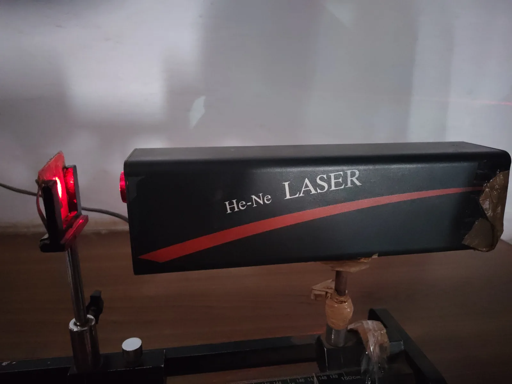
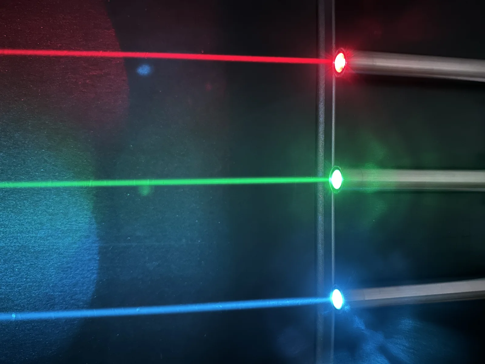

Laser ja kvanttirakenteet
Miksi laserosoittimen valo kulkee pimeän luokan poikki kapeana säteenä ja näkyy seinällä pienenä pisteenä, mutta taskulampun valo leviää laajaksi himmeäksi läiskäksi?
Pohjatiedot
- Atomi lähettää tai absorboi fotonin, jonka energia on tasojen erotus $hf = E_\text{y} - E_\text{a}$luku Vetyatomin energiatasot ja Bohrin malli
- Rajatussa tilassa, esimerkiksi kiinnitetyssä kielessä, seisovia aaltoja voi olla vain tietyillä aallonpituuksilla. Elektronin tilat muistuttavat niitäluku Aaltomekaaninen atomimalli ja orbitaalit
- LEDin ja laserdiodin valon väri riippuu puolijohteen energiaraostaluku LEDin valo ja Planckin vakion mittaaminen
Ydinpolku: tee vaiheet järjestyksessä. Ydinpolulla ei vain lasketa. Siinä myös tutkitaan, selitetään ja piirretään kuvaajia. Valinnainen-tehtävät ovat lisäharjoittelua. Valinnaisia tehtäviä on 5.
Luvun tärkeät käsitteet Vapaaehtoinen
Tutustu luvun tärkeisiin käsitteisiin. Voit kirjoittaa niiden merkitykset sinulle vahvimmalla kielellä tai useammalla kielellä.
- Stimuloitu emissio
- Saapuva fotoni saa viritetyn atomin lähettämään toisen, täysin samanlaisen fotonin. Fotoneilla on sama energia, suunta ja vaihe.
- Populaatioinversio
- Tila, jossa ylemmällä energiatasolla on enemmän atomeja kuin alemmalla. Vain silloin valo vahvistuu aineessa.
- Laser
- Laite, joka vahvistaa valoa stimuloidulla emissiolla. Sen valo on yksiväristä, suuntautunutta ja koherenttia eli aallot ovat samassa tahdissa.
- Kvanttipiste
- Muutaman nanometrin kokoinen kide, johon elektronit on suljettu. Pisteen koko määrää energiaraon ja siten valon värin.
- Tunneloituminen
- Elektroni voi löytyä ohuen esteen takaa, vaikka sen energia ei riitä esteen yli.
Pohdinta
Luokka on pimennetty. Laserosoitin ja taskulamppu osoittavat samaan seinään viiden metrin päästä. Laserosoittimen valo näkyy seinällä kirkkaana punaisena pisteenä, jonka koko on muutama millimetri. Taskulampun valo leviää metrin levyiseksi himmeäksi läiskäksi. Silti taskulamppu lähettää valoa moninkertaisella teholla. Laserosoittimen teho on vain noin $1\,\text{mW}$.
Mikä laserissa tekee valosta näin kapean ja yksivärisen säteen? Miten sellaista valoa saadaan aikaan?
Valinnainen Kertaa: siirtymän fotoni
Ennusta
Tee ennusteet ennen tutkimista 2 kysymystä
Ennuste 1: pumppausta lisätään
Ennuste 2: vain kaksi tasoa
Tutki
Simulaatio
Käyttöohje
Laseraine valitsee kolmitasoisen aineen, esimerkiksi rubiinin, tai kaksitasoisen aineen. Peilit asettaa peilit paikalleen tai poistaa ne. Liukusäädin muuttaa pumppaustehoa $P_\text{p}$ välillä $0$–$5{,}0\,\text{W}$. Sauvassa oranssit atomit ovat ylemmällä lasertasolla ja siniset alemmalla. Vasemmalla alhaalla palkit näyttävät, kuinka suuri osa atomeista on kummallakin tasolla. Katkoviiva merkitsee $50\,\%$:a. Oikealla kuvaaja näyttää säteen tehon $P_\text{ulos}$ pumppaustehon funktiona. Haalea käyrä on mallin käyrä ja piste on nykyinen tila. Pysäytä pysäyttää animaation. Nopeus muuttaa vain animaation tahtia.
Mallin oletukset
Malli laskee tasapainotilan, johon laser asettuu muutamassa millisekunnissa. Animaatio vain havainnollistaa sitä. Ylemmän lasertason elinaika on $1{,}0\,\text{ms}$. Kolmitasoisessa aineessa pumppaus nostaa atomit lyhytikäiselle tasolle $E_3$. Sieltä ne siirtyvät heti tasolle $E_2$, joten tasolla $E_3$ ei ole atomeja. Peilien kanssa laser käynnistyy, kun $N_2 - N_1$ ylittää $10\,\%$ atomien määrästä. Tämä vastaa peilin läpi ja muualle menetettyä valoa. Ilman peilejä kynnystä ei saavuteta. Kaksitasoisessa aineessa pumppausvalo virittää ja saa atomit lähettämään valoa yhtä todennäköisesti. Aineen lämpeneminen jätetään huomiotta. Arvot ovat mallin laskemia, eivät mittauksia.
Laskennan selitys
Pumppausnopeus on $W = \tfrac{P_\text{p}}{1\,\text{W} \cdot \tau}$, missä $\tau = 1{,}0\,\text{ms}$. Tasapainossa ylätasolle pumpataan atomeja yhtä paljon kuin sieltä purkautuu. Kolmella tasolla ennen kynnystä
$$N_2 = \frac{W\tau}{1 + W\tau},$$
ja kahdella tasolla $N_2 = \tfrac{W\tau}{1 + 2W\tau}$. Se jää aina alle $50\,\%$:n. Kun laser toimii, $N_2$ pysyy kynnysarvossa $55\,\%$. Sen yli pumpattu energia lähtee säteeseen: $P_\text{ulos} = 100\,\text{mW} \cdot (W\tau N_1 - N_2)$, kun $N_1$ ja $N_2$ ovat osuuksia.
Valitse laseraine ja peilit ja säädä pumppaustehoa. Katso atomien värejä sauvassa, tasojen palkkeja ja säteen tehoa kuvaajassa.
Koe 1: kolmitasoinen laser
Testaa ennuste 1. Laseraine on kolmitasoinen ja peilit ovat paikallaan. Muuta vain pumppaustehoa. Kirjaa ainakin tehot $1{,}0\,\text{W}$, $1{,}5\,\text{W}$, $2{,}0\,\text{W}$ ja $3{,}0\,\text{W}$. Katso myös, miten $N_2$ muuttuu, kun säde syntyy.
- Alkutila
- laseraine: kolme tasoa, peilit: paikallaan, pumppausteho $P_\text{p}$ = $1{,}0\,\text{W}$
- Vakiona
- laseraine, peilit
- Muutetaan
- pumppausteho $P_\text{p}$
| pumppausteho $P_\text{p}$ | $N_2$ $(\%)$ | inversio | $P_\text{ulos}$ $(\text{mW})$ |
|---|
Lisää tutkittavaa 4 tehtävää
Koe 2: kaksitasoinen aine
Testaa ennuste 2. Laseraine on nyt kaksitasoinen, ja peilit ovat paikallaan. Kirjaa ainakin tehot $1{,}0\,\text{W}$, $2{,}0\,\text{W}$ ja $5{,}0\,\text{W}$. Mitä arvoa osuus $N_2$ lähestyy?
- Alkutila
- laseraine: kaksi tasoa, peilit: paikallaan, pumppausteho $P_\text{p}$ = $1{,}0\,\text{W}$
- Vakiona
- laseraine, peilit
- Muutetaan
- pumppausteho $P_\text{p}$
| pumppausteho $P_\text{p}$ | $N_2$ $(\%)$ | inversio | $P_\text{ulos}$ $(\text{mW})$ |
|---|
Valinnainen Koe 3: ilman peilejä
Poista peilit ja toista koe kolmitasoisella aineella. Kirjaa ainakin tehot $2{,}0\,\text{W}$ ja $5{,}0\,\text{W}$. Syntyykö populaatioinversio? Syntyykö lasersäde?
- Alkutila
- laseraine: kolme tasoa, peilit: ei peilejä, pumppausteho $P_\text{p}$ = $2{,}0\,\text{W}$
- Vakiona
- laseraine, peilit
- Muutetaan
- pumppausteho $P_\text{p}$
| pumppausteho $P_\text{p}$ | $N_2$ $(\%)$ | inversio | $P_\text{ulos}$ $(\text{mW})$ |
|---|
Johtopäätös: milloin laser toimii?
Kirjoita taulukoidesi perusteella, milloin laser alkaa lähettää sädettä. Kirjoita myös, miksi kaksitasoisesta aineesta ei saa laseria.
Mallivastaus
Kolmitasoisessa aineessa sädettä ei synny pumppaustehoilla $1{,}0\,\text{W}$ ja sen alle. Silloin $N_2 \leq 50\,\%$, eikä inversiota ole. Kynnyksen jälkeen säteen teho kasvaa tasaisesti. Mallissa kynnys on noin $1{,}22\,\text{W}$. Teho on $12{,}5\,\text{mW}$, $35\,\text{mW}$ ja $80\,\text{mW}$ tehoilla $1{,}5\,\text{W}$, $2{,}0\,\text{W}$ ja $3{,}0\,\text{W}$. Samalla $N_2$ pysähtyy arvoon $55\,\%$. Stimuloitu emissio purkaa ylätasoa yhtä nopeasti kuin pumppaus täyttää sitä, ja ylimääräinen pumppausteho menee säteeseen. Kaksitasoisessa aineessa $N_2$ jää alle $50\,\%$:n ($33{,}3\,\%$, $40{,}0\,\%$, $45{,}5\,\%$). Pumppausvalo saa viritetyt atomit lähettämään valoa yhtä todennäköisesti kuin se virittää perustilan atomeja. Ilman inversiota valo ei vahvistu. Valinnaisen kokeen 3 mukaan inversio ei yksin riitä. Ilman peilejä valo ei kulje aineen läpi tarpeeksi monta kertaa. Arvot ovat mallin laskemia.
Arvioi oma vastauksesi
Merkitse kohdat, jotka sinun vastauksessasi jo on.
Kertaa asia teoriasta ja harjoittele tehtävillä.
Kvanttipisteiden värit
Laboratoriossa on viisi pulloa. Niissä kaikissa on samaa ainetta, kadmiumselenidiä, kvanttipisteinä. Pullot eroavat toisistaan vain pisteiden koon osalta. Kun pulloja valaistaan ultraviolettilampulla, ne hohtavat eri väreinä:
| Halkaisija $d$ (nm) | Aallonpituus $\lambda$ (nm) |
|---|---|
| $2{,}0$ | $480$ |
| $3{,}0$ | $530$ |
| $4{,}0$ | $570$ |
| $5{,}0$ | $600$ |
| $6{,}0$ | $620$ |
Ison kadmiumselenidikiteen energiarako on $1{,}74\,\text{eV}$.
Esimerkkiaineisto.
Teoria
Ydinajatus
Atomi ja fotoni: kolme tapahtumaa
Luvussa Vetyatomin energiatasot ja Bohrin malli atomi voi ottaa vastaan eli absorboida fotonin. Fotonin energian pitää olla sama kuin kahden energiatason erotus. Atomi voi myös lähettää tällaisen fotonin, kun se putoaa alemmalle tasolle. Viritetty atomi on atomi, jonka elektroni on ylemmällä tasolla. Viritetty atomi lähettää fotonin yleensä itsestään. Se tapahtuu satunnaisella hetkellä ja satunnaiseen suuntaan. Tämä on spontaani emissio. Emissio tarkoittaa valon lähettämistä. Lampun ja LEDin valo syntyy näin. Eri atomien fotonit lähtevät siksi eri suuntiin ja eri tahdissa.
Albert Einstein päätteli vuonna 1917, että on olemassa myös kolmas tapahtuma. Viritettyyn atomiin osuu fotoni. Sen energia on täsmälleen tasojen erotus $E_2 - E_1$. Silloin atomi voi pudota alemmalle tasolle heti. Tämä on stimuloitu emissio. Stimuloitu tarkoittaa, että toinen fotoni saa tapahtuman aikaan. Saapuva fotoni ei katoa. Sen viereen syntyy toinen fotoni. Uudella fotonilla on sama energia eli sama aallonpituus, sama kulkusuunta ja sama vaihe. Vaihe tarkoittaa, että aallot ovat samassa tahdissa. Yhdestä fotonista tulee kaksi samanlaista, kahdesta neljä ja niin edelleen. Laser toimii tämän valon vahvistumisen avulla. Sana tulee englannin sanoista light amplification by stimulated emission of radiation.
Populaatioinversio
Fotoni, joka saa viritetyn atomin lähettämään valoa, voi myös osua perustilassa olevaan atomiin. Silloin fotoni absorboituu. Kumpi tapahtuu useammin, riippuu siitä, kummalla tasolla atomeja on enemmän. Yleensä melkein kaikki atomit ovat perustilassa. Silloin fotoni absorboituu paljon todennäköisemmin kuin se monistuu, ja valo heikkenee aineessa. Valo vahvistuu vain, jos ylemmällä tasolla on enemmän atomeja kuin alemmalla, $N_2 > N_1$. Tätä tilaa kutsutaan populaatioinversioksi. Lämmittäminen ei tuota sitä. Lämpimässäkin aineessa alemmalla tasolla on aina enemmän atomeja kuin ylemmällä.
Inversio tehdään pumppaamalla. Pumppaaminen tarkoittaa, että atomeihin tuodaan energiaa valolla, sähköpurkauksella tai sähkövirralla. Ajatellaan yksinkertaista mallia, jossa on vain kaksi erillistä energiatasoa. Siinä inversiota ei saada aikaan pumppaamalla samalla resonanssivalolla. Pumppausvalon fotonit aiheuttavat ylätilan atomeissa stimuloitua emissiota yhtä todennäköisesti kuin ne virittävät perustilan atomeja. Siksi ylätilaan saadaan enintään puolet atomeista. Monissa atomi- ja ionilasereissa käytetään siksi kolmea tai neljää energiatasoa. Puolijohdelaserissa valon vahvistuminen perustuu puolijohteen energiavöihin. Inversio syntyy siinä sähkövirran avulla. Rubiinissa pumppauslampun vihreä valo nostaa atomeja lyhytikäiselle tasolle $E_3$. Sieltä atomit siirtyvät nopeasti ja ilman valoa tasolle $E_2$. Taso $E_2$ on pitkäikäinen. Atomi pysyy siinä keskimäärin muutaman millisekunnin. Se on satojatuhansia kertoja kauemmin kuin tavallisessa viritystilassa ($10^{-8}\,\text{s}$). Siksi tasolle $E_2$ ehtii kertyä enemmän atomeja kuin perustilaan jää.
Peilit tekevät valosta säteen
Laseraine on kahden peilin välissä. Toinen peili heijastaa kaiken valon. Toinen heijastaa esimerkiksi $99\,\%$ ja päästää loput läpi. Fotoni kulkee peilien välillä akselin suuntaisesti. Se kulkee aineen läpi satoja kertoja ja tekee matkallaan stimuloituja kopioita itsestään. Sivulle lähtevät fotonit poistuvat aineesta, eivätkä ne ehdi monistua. Siksi vahvistuu vain akselin suuntainen valo. Osittain läpäisevän peilin läpi tulee ulos säde. Laser alkaa toimia vasta, kun pumppaus on niin voimakas, että vahvistuminen korvaa peilin läpi ja muualle menetetyn valon. Tätä pumppauksen raja-arvoa kutsutaan kynnykseksi.
Laservalo on lähes yksiväristä, koska fotonit syntyvät samassa siirtymässä. Se on suuntautunutta, koska vain akselin suuntainen valo vahvistuu. Siksi säde levenee vain vähän. Laservalo on myös koherenttia. Se tarkoittaa, että aallot ovat samassa tahdissa, koska jokainen stimuloitu fotoni kopioi saapuvan fotonin vaiheen. Taskulampun valossa on monia aallonpituuksia. Se lähtee eri suuntiin ja eri tahdissa. Myös laserdiodissa on vahvistava aine ja peilit. Sähkövirta synnyttää inversion puolijohteessa, ja kiteen lohkaistut päät toimivat peileinä. Laserdiodin energiatasot ovat kuitenkin energiavöitä eivätkä yksittäisen atomin tasoja.
Kvanttirakenteet: koko määrää energiatasot
Puolijohteen energiarako on pienin energia, jonka sen elektroni voi saada valosta tai antaa valoksi. Se määrää LEDin valon värin (luku LEDin valo ja Planckin vakion mittaaminen). Isossa kiteessä energiarako riippuu vain aineesta. Luvussa Aaltomekaaninen atomimalli ja orbitaalit elektronin tiloja verrattiin kielen seisoviin aaltoihin. Lyhyemmän kielen sallitut värähtelyt ovat korkeampia ja kauempana toisistaan. Samoin käy, kun elektronit suljetaan rakenteeseen, jonka koko on vain muutamia nanometrejä. Sallitut energiat ovat silloin kauempana toisistaan. Energiarako kasvaa, kun rakenne pienenee. Tällaisia puolijohteen rakenteita kutsutaan kvanttirakenteiksi. Ohut kerros on kvanttikaivo. Nanokide, joka on rajattu joka suunnasta, on kvanttipiste.
Puolijohdekvanttipisteen väri voidaan siis valita sen koolla, vaikka aine on sama. Kadmiumselenidistä tehty kvanttipiste, jonka halkaisija on $2\,\text{nm}$, lähettää syaania valoa. Piste, jonka halkaisija on $6\,\text{nm}$, lähettää punaista valoa. Ison kadmiumselenidikiteen energiarako on $1{,}74\,\text{eV}$. Se vastaa tummanpunaista valoa näkyvän alueen reunalla, noin $713\,\text{nm}$. Kun pistettä pienennetään, valon aallonpituus lyhenee. Tässä luvussa riittää tämä laadullinen yhteys. Energiatasojen tarkka laskeminen pisteen koosta vaatii kvanttimekaanista mallinnusta. Tehtävät, joissa koon ja aallonpituuden yhteyttä lasketaan, ovat lisätietoa. Kemian Nobel-palkinto myönnettiin kvanttipisteiden löytämisestä ja valmistamisesta vuonna 2023.

Kvanttirakenteiden sovelluksia
Kvanttipistenäytössä sininen taustavalo osuu kvanttipisteisiin. Pisteet absorboivat sen ja lähettävät puhdasta vihreää tai punaista valoa. Sama tapahtuu fluoresenssissa luvussa Spektrit paljastavat atomin energiatasot. Useimmat laserdiodit ovat kvanttikaivolasereita. Niissä kaivon paksuus valitsee aallonpituuden. Aurinkokennoihin tutkitaan kvanttipistekerroksia. Pisteiden koon avulla kerros voidaan säätää absorboimaan haluttu osa Auringon spektristä.
Kvanttitietokoneen perusyksikkö on kubitti. Kubitti on kvanttijärjestelmä, jolla on kaksi tilaa. Se voi olla myös näiden tilojen yhdistelmässä eli superpositiossa. Kubitteja tehdään esimerkiksi elektroneista, jotka on suljettu puolijohteen kvanttipisteisiin, ja suprajohtavista piireistä. Tällainen piiri käyttäytyy kuin keinotekoinen atomi, jolla on omat kvantittuneet energiatasonsa. Suomessa suprajohtavia kvanttitietokoneita rakentavat VTT ja IQM. Kubitin tilat ovat herkkiä. Siksi piirit jäähdytetään lähelle absoluuttista nollapistettä ja suojataan ympäristön häiriöiltä.

Laserin fotonit
Kaikki laserin fotonit syntyvät samassa siirtymässä. Siksi jokaisen fotonin energia ja aallonpituus ovat
$$\begin{aligned} hf &= E_2 - E_1 \\ \lambda &= \frac{hc}{E_2 - E_1} \end{aligned}$$
missä $E_2$ on ylemmän ja $E_1$ alemman lasertason energia, $h = 6{,}626 \cdot 10^{-34}\,\text{J}\,\text{s}$ on Planckin vakio, $f$ on valon taajuus, $c = 2{,}998 \cdot 10^{8}\,\text{m/s}$ on valon nopeus ja $\lambda$ on aallonpituus.
Fotonit ovat samanlaisia. Siksi laserin teho on sekunnissa lähtevien fotonien määrä kerrottuna yhden fotonin energialla:
$$P = \frac{N}{t} \cdot hf$$
missä $P$ on laserin teho ja $N$ on aikana $t$ lähtevien fotonien määrä. Fotonien määrä sekunnissa on siis $\tfrac{N}{t} = \tfrac{P}{hf}$. Energiat lasketaan usein elektronivoltteina. Ne muunnetaan jouleiksi sijoittamalla $1\,\text{eV} = 1{,}602 \cdot 10^{-19}\,\text{J}$.
Samalla teholla pidemmän aallonpituuden laser lähettää enemmän fotoneja, koska yksi fotoni kantaa vähemmän energiaa. Kuvaajassa punainen laserosoitin, jonka teho on $1{,}0\,\text{mW}$, lähettää noin $3{,}3 \cdot 10^{15}$ fotonia sekunnissa. Yhtä tehokas violetti laserosoitin lähettää noin $2{,}0 \cdot 10^{15}$ fotonia sekunnissa.
Yleinen virhekäsitys
Moni luulee, että laservalo on vaarallista, koska sen fotonit ovat erityisen energisiä. Fotonin energia riippuu kuitenkin vain aallonpituudesta. Punaisen laserosoittimen fotonin energia $1{,}91\,\text{eV}$ on sama kuin minkä tahansa $650\,\text{nm}$:n valon fotonin energia. Violetin $405\,\text{nm}$:n valon fotonit ovat energisempiä, tulivat ne laserista tai lampusta. Laserin vaara on siinä, että koko teho kulkee kapeassa säteessä. Silmän linssi kohdistaa säteen verkkokalvolle hyvin pieneksi pisteeksi. Siksi koulussa käytetään vain pienitehoisia lasereita. Säteeseen tai sen peiliheijastukseen ei katsota, eikä sädettä suunnata ihmisiin.
Toinen virhe on ajatella, että stimuloidussa emissiossa atomi absorboi fotonin ja lähettää kaksi. Saapuva fotoni ei absorboidu, vaan jatkaa matkaansa. Uuden fotonin energian antaa viritetty atomi, joka putoaa tasolta $E_2$ tasolle $E_1$. Siksi energia säilyy.
Tiivistelmä
- Viritetty atomi voi lähettää fotonin itsestään (spontaani emissio) tai saapuvan fotonin vaikutuksesta (stimuloitu emissio). Stimuloidussa emissiossa syntyy fotoni, jolla on saapuvan fotonin energia, suunta ja vaihe.
- Valo vahvistuu vain, kun ylemmällä lasertasolla on enemmän atomeja kuin alemmalla, $N_2 > N_1$ (populaatioinversio). Atomi- ja ionilasereissa inversio saadaan pumppaamalla aineeseen, jossa on kolme tai neljä tasoa ja pitkäikäinen ylempi lasertaso. Puolijohdelaserissa inversio syntyy sähkövirralla energiavöihin.
- Peilien välissä akselin suuntainen valo kulkee aineen läpi monta kertaa ja vahvistuu. Laser toimii, kun pumppaus ylittää kynnyksen. Laservalo on lähes yksiväristä, suuntautunutta ja koherenttia.
- Laserin fotonien energia on $hf = E_2 - E_1$, ja teho on $P = \tfrac{N}{t} \cdot hf$.
- Puolijohteen kvanttirakenteissa elektronit on suljettu nanometrien kokoiseen tilaan. Energiarako kasvaa, kun rakenne pienenee: pienempi kvanttipiste lähettää lyhyempää aallonpituutta. Sovelluksia ovat kvanttipistenäytöt, kvanttikaivolaserit, aurinkokennojen tutkimus ja kvanttitietokoneiden kubitit.
Valinnainen Tunneloituminen
Tunneloituminen
Klassisen fysiikan mukaan pallo vierii takaisin, jos sen energia ei riitä mäen yli. Kvanttifysiikassa elektronin havaitsemisen todennäköisyys ei lopu esteen reunaan. Se pienenee esteen sisällä nopeasti. Jos este on hyvin ohut, todennäköisyys jää esteen takana pieneksi mutta ei nollaksi. Elektroni voi löytyä esteen takaa, vaikka sen energia on pienempi kuin esteen ylittämiseen tarvittava energia. Tätä kutsutaan tunneloitumiseksi. Todennäköisyys pienenee erittäin jyrkästi, kun este paksuuntuu tai sen korkeus kasvaa. Siksi tunneloituminen on merkittävää vain nanometrien luokkaa olevilla esteillä.
Tunnelointimikroskoopissa terävä metallikärki viedään noin nanometrin päähän pinnasta. Kärjen ja pinnan välillä tunneloituvien elektronien virta muuttuu voimakkaasti etäisyyden mukaan. Siksi kärjellä voidaan kuvata yksittäisiä atomeja. Flash-muistin muistisoluun kirjoitetaan bitti siirtämällä elektroneja ohuen eristekerroksen läpi tunneloitumalla. Suprajohtavissa kubiteissa virta kulkee ohuen eristekerroksen läpi tunneloitumalla. Vuoden 2025 fysiikan Nobel-palkinto myönnettiin kvanttitunneloitumisen ja energian kvantittumisen havaitsemisesta tällaisissa piireissä. Myös alfahajoaminen on tunneloitumista. Siitä kerrotaan luvussa Atomiydin ja radioaktiivinen hajoaminen.
Valinnainen Palaa ennusteisiisi
Vertaa ennusteitasi mallin arvoihin. Palaa sitten alun kysymykseen: miksi laserin valo on kapea ja yksivärinen säde, mutta taskulampun valo leviää?
Haluaisitko muuttaa ennustettasi?
Esimerkit
Kun olet lukenut teorian, tee ohjatut esimerkit. Ensin katsot mallilaskun vaihe vaiheelta. Sitten teet valinnat itse. Vihjeet auttavat, jos jäät jumiin.
Esimerkki 1: Laserin fotonit sekunnissa
Helium–neonlaserin lasersiirtymän tasojen energiaero on $1{,}96\,\text{eV}$, ja laserin teho on $1{,}0\,\text{mW}$. Kuinka monta fotonia laser lähettää sekunnissa?
Vaihe 1/7
Tunnetut ja kysytty. Tasojen energiaero on $E_2 - E_1 = 1{,}96\,\text{eV}$ ja teho on $P = 1{,}0\,\text{mW}$. Kysytään sekunnissa lähtevien fotonien määrää $\tfrac{N}{t}$.
Vaihe 2/7
Periaate. Kaikki laserin fotonit syntyvät samassa siirtymässä. Siksi jokaisen fotonin energia on $hf = E_2 - E_1$. Teho on fotonien määrä sekunnissa kerrottuna yhden fotonin energialla.
Vaihe 3/7
Kaava ratkaistuna. Sijoitetaan fotonin energiaksi tasojen erotus ja ratkaistaan fotonien määrä sekunnissa:
$$\begin{aligned} P &= \frac{N}{t} \cdot (E_2 - E_1) \\ \frac{N}{t} &= \frac{P}{E_2 - E_1} \end{aligned}$$
Vaihe 4/7
Yksikkömuunnokset. Teho on
Energiaero muunnetaan jouleiksi sijoittamalla $1\,\text{eV} = 1{,}602 \cdot 10^{-19}\,\text{J}$:
Vaihe 5/7
Sijoitus. $$\begin{aligned} \frac{N}{t} &= \frac{P}{E_2 - E_1} \\ &= \frac{1{,}0 \cdot 10^{-3}\,\text{W}}{3{,}1399 \cdot 10^{-19}\,\text{J}} \\ &= 3{,}1848 \cdot 10^{15}\,\tfrac{1}{\text{s}} \end{aligned}$$
Vaihe 6/7
Tulos. Laser lähettää noin $3{,}2 \cdot 10^{15}$ fotonia sekunnissa. Tulos annetaan kahdella merkitsevällä numerolla, koska teho $1{,}0\,\text{mW}$ on annettu kahdella.
Vaihe 7/7
Järkevyys. Yksikkö on oikein, koska
Energiaeroa vastaa aallonpituus
Se on helium–neonlaserin tuttu punainen valo. Kuvaajan mukaan laser, jonka teho on $1{,}0\,\text{mW}$, lähettää aallonpituudella $650\,\text{nm}$ noin $3{,}3 \cdot 10^{15}$ fotonia sekunnissa. Lyhyemmällä aallonpituudella fotonien määrä on hieman pienempi, joten tulos on uskottava.
Valinnainen Esimerkki 2: Etsi virhe
Esimerkki 3: Sovella uuteen tilanteeseen
Teollisuudessa metallia leikataan kuitulaserilla. Säteen teho on $1{,}0\,\text{kW}$ ja aallonpituus $1070\,\text{nm}$. Laseria pumpataan laserdiodien valolla, jonka aallonpituus on $976\,\text{nm}$. Jokainen pumppausfotoni voi tuottaa enintään yhden laserfotonin. Energiaero jää kuituun lämmöksi.
Kuinka paljon lämpöä kuituun syntyy sekunnissa vähintään? Vastaa watteina.
Vihje 1: ohjaava kysymys
Laske ensin, kuinka paljon pumppaustehoa vähintään tarvitaan. Kun jokainen pumppausfotoni tuottaa yhden laserfotonin, fotoneja on sekunnissa yhtä paljon.
Vihje 2: mikä yhteys
Kun fotoneja on sekunnissa yhtä paljon, teho on verrannollinen fotonin energiaan $\tfrac{hc}{\lambda}$: $P_\text{p} = P_\text{L} \cdot \tfrac{\lambda_\text{L}}{\lambda_\text{p}}$.
Vihje 3: välivaihe
Lämpöä syntyy pumppaustehon ja säteen tehon erotuksen verran.
Näytä ratkaisu
Annettu
säteen teho $P_\text{L} = 1{,}0\,\text{kW}$, laservalon aallonpituus $\lambda_\text{L} = 1070\,\text{nm}$, pumppausvalon aallonpituus $\lambda_\text{p} = 976\,\text{nm}$. Yksi pumppausfotoni tuottaa enintään yhden laserfotonin.
Kysytty
kuituun sekunnissa syntyvä lämpö eli lämpöteho $P_\text{lämpö}$ watteina, pienin mahdollinen arvo
Periaate
Energia säilyy. Pumppausvalon teho jakautuu säteeseen ja lämpöön. Lämpöä syntyy vähiten, kun jokainen pumppausfotoni tuottaa laserfotonin. Silloin fotoneja on sekunnissa yhtä paljon. Koska $P = \tfrac{N}{t} \cdot \tfrac{hc}{\lambda}$, tehot suhtautuvat toisiinsa kuten fotonien energiat.
Kaava
joten
$$P_\text{lämpö} = P_\text{p} - P_\text{L} = P_\text{L} \left(\frac{\lambda_\text{L}}{\lambda_\text{p}} - 1\right)$$
Muunnokset
Aallonpituudet ovat samassa yksikössä, joten niiden suhteen voi laskea nanometreinä.
Sijoitus
Vastaus
$96\,\text{W}$
Vastauksessa on kaksi merkitsevää numeroa, kuten säteen tehossa $1{,}0\,\text{kW}$.
Järkevyys
Pumppausfotonin ja laserfotonin energiat ovat $1{,}27\,\text{eV}$ ja $1{,}16\,\text{eV}$. Ne eroavat toisistaan noin $10\,\%$. Siksi lämpöä syntyy noin kymmenesosa säteen tehosta. Todellisuudessa kaikki pumppausfotonit eivät tuota laserfotonia, joten lämpöä syntyy enemmän. Siksi kuitua jäähdytetään.
Kertaa luvun käsitteet
Jos valitset Kertaa myöhemmin, kortti menee kertauspakkaasi.
- Tunneloituminen
- Hiukkanen voi kvanttimekaniikan mukaan löytyä esteen toiselta puolelta ilman klassisesti riittävää energiaa.
- Aurinkokenno
- Puolijohdelaite, joka muuntaa sähkömagneettisen säteilyn energiaa sähköenergiaksi.
- Stimuloitu emissio
- Fotoni saa virittyneen atomin emittoimaan toisen samanenergisen fotonin.
- Laser
- Tuottaa voimakkaasti suunnattua, lähes yksiväristä ja koherenttia sähkömagneettista säteilyä.
- Koherentti valo
- Aallot värähtelevät keskenään vakiossa vaihe-erossa.
Tehtävät
Taso 1 · perusharjoitus 9 tehtävää
Yksi kaava tai yksi päättelyaskel. Tee ensin ydintehtävät. Loput ovat lisäharjoitusta.
- Tehtävä 7-1
Helium–neonlaserin punaisen valon aallonpituus on $633\,\text{nm}$. Laske yhden laserfotonin energia elektronivoltteina ($h = 6{,}626 \cdot 10^{-34}\,\text{J}\,\text{s}$, $c = 2{,}998 \cdot 10^{8}\,\text{m/s}$, $1\,\text{eV} = 1{,}602 \cdot 10^{-19}\,\text{J}$).
Vastaus
$1{,}96\,\text{eV}$
Näytä ratkaisu
Annettu
laservalon aallonpituus $\lambda = 633\,\text{nm}$, $h = 6{,}626 \cdot 10^{-34}\,\text{J}\,\text{s}$, $c = 2{,}998 \cdot 10^{8}\,\text{m/s}$, $1\,\text{eV} = 1{,}602 \cdot 10^{-19}\,\text{J}$
Kysytty
yhden laserfotonin energia $E$ elektronivoltteina
Periaate
Kaikki laserin fotonit syntyvät samassa siirtymässä. Siksi niillä on sama energia. Yhden fotonin energia riippuu vain valon aallonpituudesta.
Kaava
$E = hf$ ja $f = \tfrac{c}{\lambda}$, joten $E = \dfrac{hc}{\lambda}$
Muunnokset
$\lambda$$= 633\,\text{nm}$$= 633 \cdot 10^{-9}\,\text{m}$Lopuksi joulet muunnetaan elektronivolteiksi sijoittamalla $1\,\text{eV} = 1{,}602 \cdot 10^{-19}\,\text{J}$.
Sijoitus
$E$$= (6{,}626 \cdot 10^{-34}\,\text{J}\,\text{s} \cdot 2{,}998 \cdot 10^{8}\,\text{m/s}) : (633 \cdot 10^{-9}\,\text{m})$$= 3{,}1382 \cdot 10^{-19}\,\text{J}$$= \dfrac{3{,}1382 \cdot 10^{-19}}{1{,}602 \cdot 10^{-19}}\,\text{eV}$$= 1{,}9589\,\text{eV}$Vastaus
$1{,}96\,\text{eV}$
Vastauksessa on kolme merkitsevää numeroa, kuten aallonpituudessa $633\,\text{nm}$.
Järkevyys
Näkyvän valon fotonien energiat ovat noin $1{,}7$–$3{,}3\,\text{eV}$. Punainen valo on alueen pienienergisessä päässä, ja tulos on siellä. Vedyn punaisen viivan $656\,\text{nm}$ fotonin energia on $1{,}89\,\text{eV}$. Hieman lyhyemmällä aallonpituudella energia on hieman suurempi.
- Tehtävä 7-2
Valokuituyhteyksissä käytetään laserdiodeja, joiden valon aallonpituus on $1550\,\text{nm}$. Laske yhden fotonin energia elektronivoltteina ($h = 6{,}626 \cdot 10^{-34}\,\text{J}\,\text{s}$, $c = 2{,}998 \cdot 10^{8}\,\text{m/s}$, $1\,\text{eV} = 1{,}602 \cdot 10^{-19}\,\text{J}$).
Vastaus
$0{,}800\,\text{eV}$
Näytä ratkaisu
Annettu
aallonpituus $\lambda = 1550\,\text{nm}$, $h = 6{,}626 \cdot 10^{-34}\,\text{J}\,\text{s}$, $c = 2{,}998 \cdot 10^{8}\,\text{m/s}$, $1\,\text{eV} = 1{,}602 \cdot 10^{-19}\,\text{J}$
Kysytty
yhden fotonin energia $E$ elektronivoltteina
Periaate
Valo koostuu fotoneista. Yhden fotonin energia on kääntäen verrannollinen valon aallonpituuteen.
Kaava
$E = \dfrac{hc}{\lambda}$
Muunnokset
$\lambda$$= 1550\,\text{nm}$$= 1550 \cdot 10^{-9}\,\text{m}$Lopuksi joulet muunnetaan elektronivolteiksi sijoittamalla $1\,\text{eV} = 1{,}602 \cdot 10^{-19}\,\text{J}$.
Sijoitus
$E$$= \dfrac{1{,}9865 \cdot 10^{-25}\,\text{J}\,\text{m}}{1550 \cdot 10^{-9}\,\text{m}}$$= 1{,}2816 \cdot 10^{-19}\,\text{J}$$= \dfrac{1{,}2816 \cdot 10^{-19}}{1{,}602 \cdot 10^{-19}}\,\text{eV}$$= 0{,}80000\,\text{eV}$kun
$hc$$= 6{,}626 \cdot 10^{-34}\,\text{J}\,\text{s} \cdot 2{,}998 \cdot 10^{8}\,\text{m/s}$$= 1{,}9865 \cdot 10^{-25}\,\text{J}\,\text{m}$Vastaus
$0{,}800\,\text{eV}$
Vastauksessa on kolme merkitsevää numeroa, kuten vakioissa. Aallonpituus $1550\,\text{nm}$ on annettu vähintään kolmella.
Järkevyys
Aallonpituus on yli kaksi kertaa näkyvän punaisen valon aallonpituus. Siksi energia on alle puolet punaisen fotonin energiasta, joka on noin $1{,}9\,\text{eV}$. Fotoni on infrapunaa. Sen energia on pienempi kuin näkyvän valon alaraja $1{,}7\,\text{eV}$, kuten pitääkin.
- Tehtävä 7-3Ydintehtävä
Rubiinilaserin lasersiirtymässä tasojen energiaero on $1{,}79\,\text{eV}$. Laske laservalon aallonpituus nanometreinä ($h = 6{,}626 \cdot 10^{-34}\,\text{J}\,\text{s}$, $c = 2{,}998 \cdot 10^{8}\,\text{m/s}$, $1\,\text{eV} = 1{,}602 \cdot 10^{-19}\,\text{J}$).
Vastaus
$693\,\text{nm}$
Näytä ratkaisu
Annettu
lasersiirtymän tasojen energiaero $E_2 - E_1 = 1{,}79\,\text{eV}$, $h = 6{,}626 \cdot 10^{-34}\,\text{J}\,\text{s}$, $c = 2{,}998 \cdot 10^{8}\,\text{m/s}$, $1\,\text{eV} = 1{,}602 \cdot 10^{-19}\,\text{J}$
Kysytty
laservalon aallonpituus $\lambda$ nanometreinä
Periaate
Energia säilyy. Kun ioni putoaa ylemmältä lasertasolta alemmalle, sen energia pienenee tasojen erotuksen verran. Yksi fotoni vie juuri tämän energian.
Kaava
$\dfrac{hc}{\lambda} = E_2 - E_1$, josta $\lambda = \dfrac{hc}{E_2 - E_1}$
Muunnokset
$E_2 - E_1$$= 1{,}79\,\text{eV}$$= 1{,}79 \cdot 1{,}602 \cdot 10^{-19}\,\text{J}$$= 2{,}8676 \cdot 10^{-19}\,\text{J}$Lopuksi $1\,\text{m} = 10^{9}\,\text{nm}$.
Sijoitus
$\lambda$$= (6{,}626 \cdot 10^{-34}\,\text{J}\,\text{s} \cdot 2{,}998 \cdot 10^{8}\,\text{m/s}) : (2{,}8676 \cdot 10^{-19}\,\text{J})$$= \dfrac{1{,}9865 \cdot 10^{-25}\,\text{J}\,\text{m}}{2{,}8676 \cdot 10^{-19}\,\text{J}}$$= 6{,}9274 \cdot 10^{-7}\,\text{m}$$= 692{,}74\,\text{nm}$Vastaus
$693\,\text{nm}$
Vastauksessa on kolme merkitsevää numeroa, kuten energiaerossa $1{,}79\,\text{eV}$.
Järkevyys
Tulos on näkyvän valon punaisessa päässä. Rubiinilaserin valo on tummanpunaista, ja sen aallonpituus on noin $694\,\text{nm}$. Energia $1{,}79\,\text{eV}$ on näkyvän valon alueen $1{,}7$–$3{,}3\,\text{eV}$ alapäässä. Se sopii punaiseen valoon.
- Tehtävä 7-4
Pulssilaserin yhden valopulssin energia on $3{,}0\,\text{mJ}$, ja valon aallonpituus on $1064\,\text{nm}$. Kuinka monta fotonia pulssissa on ($h = 6{,}626 \cdot 10^{-34}\,\text{J}\,\text{s}$, $c = 2{,}998 \cdot 10^{8}\,\text{m/s}$)?
Vastaus
$1{,}6 \cdot 10^{16}$
Näytä ratkaisu
Annettu
pulssin energia $E = 3{,}0\,\text{mJ}$, aallonpituus $\lambda = 1064\,\text{nm}$, $h = 6{,}626 \cdot 10^{-34}\,\text{J}\,\text{s}$, $c = 2{,}998 \cdot 10^{8}\,\text{m/s}$
Kysytty
fotonien määrä $N$ pulssissa
Periaate
Kaikki laserin fotonit ovat samanlaisia. Siksi pulssin energia on fotonien määrä kerrottuna yhden fotonin energialla $\tfrac{hc}{\lambda}$.
Kaava
$E = N \cdot \dfrac{hc}{\lambda}$, josta $N = \dfrac{E\lambda}{hc}$
Muunnokset
$E$$= 3{,}0\,\text{mJ}$$= 3{,}0 \cdot 10^{-3}\,\text{J}$$\lambda$$= 1064\,\text{nm}$$= 1064 \cdot 10^{-9}\,\text{m}$Sijoitus
$N$$= (3{,}0 \cdot 10^{-3}\,\text{J} \cdot 1064 \cdot 10^{-9}\,\text{m}) : (6{,}626 \cdot 10^{-34}\,\text{J}\,\text{s} \cdot 2{,}998 \cdot 10^{8}\,\text{m/s})$$= \dfrac{3{,}192 \cdot 10^{-9}\,\text{J}\,\text{m}}{1{,}9865 \cdot 10^{-25}\,\text{J}\,\text{m}}$$= 1{,}6069 \cdot 10^{16}$Vastaus
$1{,}6 \cdot 10^{16}$
Fotonia. Vastauksessa on kaksi merkitsevää numeroa, kuten pulssin energiassa $3{,}0\,\text{mJ}$.
Järkevyys
Yhden fotonin energia on
$\tfrac{1{,}9865 \cdot 10^{-25}\,\text{J}\,\text{m}}{1064 \cdot 10^{-9}\,\text{m}}$$\approx 1{,}9 \cdot 10^{-19}\,\text{J}$Lasketaan vielä
$1{,}6 \cdot 10^{16} \cdot 1{,}9 \cdot 10^{-19}\,\text{J}$$\approx 3 \cdot 10^{-3}\,\text{J}$kuten pitääkin. Yksikkö kumoutuu, joten tulos on pelkkä luku.
- Tehtävä 7-5
Laser lähettää $4{,}0 \cdot 10^{15}$ fotonia sekunnissa, ja jokaisen fotonin energia on $2{,}33\,\text{eV}$. Laske laserin teho milliwatteina ($1\,\text{eV} = 1{,}602 \cdot 10^{-19}\,\text{J}$).
Vastaus
$1{,}5\,\text{mW}$
Näytä ratkaisu
Annettu
fotoneja sekunnissa $\tfrac{N}{t} = 4{,}0 \cdot 10^{15}\,\tfrac{1}{\text{s}}$, fotonin energia $hf = 2{,}33\,\text{eV}$, $1\,\text{eV} = 1{,}602 \cdot 10^{-19}\,\text{J}$
Kysytty
laserin teho $P$ milliwatteina
Periaate
Teho on sekunnissa lähtevä energia. Laserin fotonit ovat samanlaisia. Siksi teho on fotonien määrä sekunnissa kerrottuna yhden fotonin energialla.
Kaava
$P = \dfrac{N}{t} \cdot hf$
Muunnokset
$hf$$= 2{,}33\,\text{eV}$$= 2{,}33 \cdot 1{,}602 \cdot 10^{-19}\,\text{J}$$= 3{,}7327 \cdot 10^{-19}\,\text{J}$Lopuksi $1\,\text{W} = 1000\,\text{mW}$.
Sijoitus
$P$$= 4{,}0 \cdot 10^{15}\,\tfrac{1}{\text{s}} \cdot 3{,}7327 \cdot 10^{-19}\,\text{J}$$= 1{,}4931 \cdot 10^{-3}\,\text{W}$$= 1{,}4931\,\text{mW}$Vastaus
$1{,}5\,\text{mW}$
Vastauksessa on kaksi merkitsevää numeroa, kuten fotonien määrässä $4{,}0 \cdot 10^{15}$.
Järkevyys
Laserosoittimien teho on tyypillisesti $1$–$5\,\text{mW}$, joten tulos on uskottava. Kuvaajan mukaan vihreä laser ($532\,\text{nm}$, $2{,}33\,\text{eV}$), jonka teho on $1{,}0\,\text{mW}$, lähettää $2{,}7 \cdot 10^{15}$ fotonia sekunnissa. Noin puolitoista kertaa enemmän fotoneja vastaa noin puolitoistakertaista tehoa.
- Tehtävä 7-6Ydintehtävä
Viritetty atomi on atomi, jolla on ylimääräistä energiaa. Se voi lähettää fotonin kahdella tavalla: spontaanisti tai stimuloidusti. Mikä erottaa stimuloidun emission spontaanista emissiosta?
Vastaus
Stimuloidussa emissiossa uusi fotoni lähtee samaan suuntaan ja samassa vaiheessa kuin sen aiheuttanut fotoni. Spontaanissa suunta on satunnainen.
Näytä ratkaisu
Kysytty
mikä erottaa stimuloidun emission spontaanista emissiosta
Periaate
Molemmissa viritetty atomi putoaa ylemmältä tasolta $E_2$ alemmalle tasolle $E_1$. Se lähettää fotonin, jonka energia on $E_2 - E_1$. Ero on siinä, mikä emission laukaisee ja millainen syntyvä fotoni on.
Mallivastaus
Spontaanissa emissiossa atomi lähettää fotonin itsestään. Fotonin suunnalla tai vaiheella ei ole yhteyttä muihin fotoneihin, joten suunta on satunnainen. Stimuloidussa emissiossa atomiin osuu fotoni, jonka energia on $E_2 - E_1$. Se saa atomin lähettämään uuden fotonin. Uusi fotoni lähtee samaan suuntaan ja samassa vaiheessa kuin saapuva fotoni. Saapuva fotoni jatkaa matkaansa. Siksi stimuloitu emissio vahvistaa valoa ja tekee siitä suuntautunutta ja koherenttia. Koherentti valo tarkoittaa, että aallot ovat samassa vaiheessa. Atomi ei absorboi fotonia stimuloidussa emissiossa. Sen energia ei nouse kummassakaan tapahtumassa. Syntyvän fotonin energia on kummassakin sama $E_2 - E_1$.
- Tehtävä 7-7
Vihreän laserosoittimen teho on $5{,}0\,\text{mW}$ ja valon aallonpituus $532\,\text{nm}$. Kuinka monta fotonia osoitin lähettää sekunnissa ($h = 6{,}626 \cdot 10^{-34}\,\text{J}\,\text{s}$, $c = 2{,}998 \cdot 10^{8}\,\text{m/s}$)?
Vastaus
$1{,}3 \cdot 10^{16}$
Näytä ratkaisu
Annettu
laserin teho $P = 5{,}0\,\text{mW}$, aallonpituus $\lambda = 532\,\text{nm}$, $h = 6{,}626 \cdot 10^{-34}\,\text{J}\,\text{s}$, $c = 2{,}998 \cdot 10^{8}\,\text{m/s}$
Kysytty
sekunnissa lähtevien fotonien määrä $\tfrac{N}{t}$
Periaate
Laserin fotonit ovat samanlaisia. Teho on fotonien määrä sekunnissa kerrottuna yhden fotonin energialla $\tfrac{hc}{\lambda}$.
Kaava
$P$$= \dfrac{N}{t} \cdot \dfrac{hc}{\lambda}$josta $\dfrac{N}{t} = \dfrac{P\lambda}{hc}$
Muunnokset
$P$$= 5{,}0\,\text{mW}$$= 5{,}0 \cdot 10^{-3}\,\text{W}$$\lambda$$= 532\,\text{nm}$$= 532 \cdot 10^{-9}\,\text{m}$Sijoitus
$hc$$= 6{,}626 \cdot 10^{-34}\,\text{J}\,\text{s} \cdot 2{,}998 \cdot 10^{8}\,\text{m/s}$$= 1{,}9865 \cdot 10^{-25}\,\text{J}\,\text{m}$$P\lambda$$= 5{,}0 \cdot 10^{-3}\,\text{W} \cdot 532 \cdot 10^{-9}\,\text{m}$$= 2{,}660 \cdot 10^{-9}\,\text{W}\,\text{m}$joten
$\tfrac{N}{t}$$= \dfrac{2{,}660 \cdot 10^{-9}\,\text{W}\,\text{m}}{1{,}9865 \cdot 10^{-25}\,\text{J}\,\text{m}}$$= 1{,}3391 \cdot 10^{16}\,\tfrac{1}{\text{s}}$Vastaus
$1{,}3 \cdot 10^{16}$
Fotonia sekunnissa (laskimen tulos $1{,}34 \cdot 10^{16}$). Vastauksessa on kaksi merkitsevää numeroa, kuten tehossa $5{,}0\,\text{mW}$.
Järkevyys
Yhden fotonin energia on
$\tfrac{1{,}9865 \cdot 10^{-25}\,\text{J}\,\text{m}}{532 \cdot 10^{-9}\,\text{m}}$$\approx 3{,}7 \cdot 10^{-19}\,\text{J}$Lisäksi
$1{,}3 \cdot 10^{16}\,\tfrac{1}{\text{s}} \cdot 3{,}7 \cdot 10^{-19}\,\text{J}$$\approx 5 \cdot 10^{-3}\,\text{W}$kuten pitää. Yksi mW antaisi $2{,}7 \cdot 10^{15}$ fotonia sekunnissa. Viisinkertaisella teholla $5{,}0\,\text{mW}$ fotoneja on noin $1{,}3 \cdot 10^{16}$ sekunnissa.
- Tehtävä 7-8
Laseraineessa on kaksi lasertasoa. Ylempi taso on $E_2$ ja alempi taso on $E_1$. Mitä populaatioinversio tarkoittaa?
Vastaus
Ylemmällä lasertasolla on enemmän atomeja kuin alemmalla. Siksi stimuloituja emissioita tapahtuu enemmän kuin absorptioita.
Näytä ratkaisu
Kysytty
mitä populaatioinversio tarkoittaa
Periaate
Saapuva fotoni, jonka energia on $E_2 - E_1$, voi tehdä kahta asiaa. Se voi absorboitua alemmalla tasolla olevaan atomiin. Tai se voi saada ylemmällä tasolla olevan atomin lähettämään uuden fotonin. Kumpi tapahtuu useammin, riippuu siitä, kummalla tasolla on enemmän atomeja.
Mallivastaus
Populaatioinversio on tila, jossa ylemmällä lasertasolla on enemmän atomeja kuin alemmalla, $N_2 > N_1$. Silloin stimuloituja emissioita tapahtuu enemmän kuin absorptioita. Läpi kulkeva valo vahvistuu. Tavallisesti tilanne on päinvastainen: lähes kaikki atomit ovat alemmalla tasolla. Silloin absorptio voittaa ja valo heikkenee. Inversio ei tarkoita sitä, että fotonien suunnat olisivat samat tai että taso olisi toisin päin. Se tarkoittaa sitä, miten atomit jakautuvat tasoille. Inversio saadaan pumppaamalla atomeja ylemmälle tasolle.
- Tehtävä 7-9
Punaisen laserosoittimen valon aallonpituus on $650\,\text{nm}$. Punaisen LEDin spektrin huippu on samalla aallonpituudella, $650\,\text{nm}$.
Kvanttipisteet A ja B on tehty samasta aineesta. Pisteen A halkaisija on $3\,\text{nm}$ ja pisteen B halkaisija on $5\,\text{nm}$.
Päättele, mitkä väitteet ovat tosia ja mitkä epätosia.
Vastaus
1 epätosi, 2 tosi, 3 epätosi, 4 epätosi, 5 tosi
Näytä ratkaisu
Kysytty
mitkä viidestä väitteestä laserista ja kvanttipisteistä A ja B ovat tosia.
Periaate
Fotonin energia riippuu vain aallonpituudesta, $hf = \tfrac{hc}{\lambda}$. Sillä ei ole väliä, millainen valonlähde fotonin lähettää. Laservalo syntyy stimuloidussa emissiossa. Se vaatii populaatioinversion $N_2 > N_1$. Inversio saadaan pumppaamalla aineeseen, jossa on ainakin kolme tasoa. Kvanttipisteessä energiarako kasvaa, kun piste pienenee.
Mallivastaus
Kummankin valonlähteen $650\,\text{nm}$:n fotonin energia on
$hf = \dfrac{hc}{\lambda}$
$$\begin{aligned} hc &= 6{,}626 \cdot 10^{-34}\,\text{J}\,\text{s} \\ &\quad \cdot 2{,}998 \cdot 10^{8}\,\text{m/s} \\ &= 1{,}9865 \cdot 10^{-25}\,\text{J}\,\text{m} \end{aligned}$$
$$\begin{aligned} hf &= \dfrac{1{,}9865 \cdot 10^{-25}\,\text{J}\,\text{m}}{650 \cdot 10^{-9}\,\text{m}} \\ &= 3{,}056 \cdot 10^{-19}\,\text{J} \end{aligned}$$
Elektronivoltteina, kun $1\,\text{eV} = 1{,}602 \cdot 10^{-19}\,\text{J}$:
$$\begin{aligned} hf &= \dfrac{3{,}056 \cdot 10^{-19}}{1{,}602 \cdot 10^{-19}}\,\text{eV} \\ &= 1{,}91\,\text{eV} \end{aligned}$$
1 epätosi: fotonien energiat ovat samat, $1{,}91\,\text{eV}$. Laserin vaara johtuu siitä, että koko teho kulkee kapeassa säteessä. Silmä kohdistaa sen pieneksi pisteeksi.
2 tosi: stimuloitu fotoni saa saapuvan fotonin energian, suunnan ja vaiheen. Siksi laservalon aallot ovat samassa tahdissa.
3 epätosi: kahden tason mallissa pumppausvalo aiheuttaa ylätilan atomeissa stimuloitua emissiota yhtä todennäköisesti kuin virittää perustilan atomeja. Ylätilaan saadaan siis enintään puolet atomeista. Atomi- ja ionilasereissa populaatioinversio tehdään pumppaamalla aineeseen, jossa on kolme tai neljä tasoa ja pitkäikäinen ylempi lasertaso.
4 epätosi: piste A on pienempi, joten sen energiarako on suurempi ja fotonin energia on suurempi. Piste A lähettää siis lyhyemmän aallonpituuden valoa kuin piste B.
5 tosi: akselin suuntainen valo kulkee peilien välissä aineen läpi monta kertaa ja vahvistuu. Osittain läpäisevän peilin läpi tulee ulos säde. Sivulle lähtevät fotonit poistuvat aineesta eivätkä ehdi monistua.
Taso 2 · soveltava harjoitus 7 tehtävää
Kaksi vaihetta, mittausaineiston käsittely, yksikkömuunnos tai kaavan ratkaiseminen. Tee ensin ydintehtävät. Loput ovat lisäharjoitusta.
- Tehtävä 7-10
Neodyymilaseria pumpataan laserdiodilla, jonka valon aallonpituus on $808\,\text{nm}$. Laser lähettää valoa, jonka aallonpituus on $1064\,\text{nm}$. Jokainen pumppausfotoni tuottaa enintään yhden laserfotonin.
Kuinka monta prosenttia pumppausfotonin energiasta voi enintään päätyä laserfotonin energiaksi?
Vastaus
$75{,}9\,\%$
Näytä ratkaisu
Annettu
pumppausvalon aallonpituus $\lambda_\text{p} = 808\,\text{nm}$, laservalon aallonpituus $\lambda_\text{L} = 1064\,\text{nm}$. Yksi pumppausfotoni tuottaa enintään yhden laserfotonin.
Kysytty
suurin osuus $\eta$ pumppausfotonin energiasta, joka päätyy laserfotonin energiaksi, prosentteina
Periaate
Yksi pumppausfotoni tuottaa yhden laserfotonin. Laserfotoniin päätyy vain osa pumppausfotonin energiasta, ja loput jää aineeseen lämmöksi. Fotonin energia on $\tfrac{hc}{\lambda}$. Siksi osuus on fotonien energioiden suhde.
Kaava
$\eta$$= \dfrac{hc / \lambda_\text{L}}{hc / \lambda_\text{p}}$josta
$\eta$$= \dfrac{\lambda_\text{p}}{\lambda_\text{L}}$Muunnokset
Ei tarvita. Aallonpituudet ovat samassa yksikössä, ja $hc$ supistuu pois. Lopuksi osuus muunnetaan prosenteiksi kertomalla luvulla $100\,\%$.
Sijoitus
$\eta$$= \dfrac{808\,\text{nm}}{1064\,\text{nm}}$$= 0{,}75940$$= 75{,}940\,\%$Vastaus
$75{,}9\,\%$
Vastauksessa on kolme merkitsevää numeroa, kuten aallonpituudessa $808\,\text{nm}$.
Järkevyys
Osuus on alle $100\,\%$. Laserfotonin aallonpituus on pidempi, joten sen energia on pienempi kuin pumppausfotonin. Energioina $\tfrac{1{,}17\,\text{eV}}{1{,}53\,\text{eV}} \approx 0{,}76$, eli sama tulos. Todellinen hyötysuhde on vielä pienempi, koska kaikki pumppausfotonit eivät tuota laserfotonia.
- Tehtävä 7-11Ydintehtävä
Punaisen laserosoittimen aallonpituus on $650\,\text{nm}$ ja violetin $405\,\text{nm}$. Molempien teho on $5{,}0\,\text{mW}$. Kuinka monta kertaa enemmän fotoneja punainen laserosoitin lähettää sekunnissa kuin violetti?
Vastaus
$1{,}60$
Näytä ratkaisu
Annettu
punaisen laserosoittimen aallonpituus $\lambda_\text{r} = 650\,\text{nm}$, violetin $\lambda_\text{v} = 405\,\text{nm}$, molempien teho $P = 5{,}0\,\text{mW}$
Kysytty
kuinka monta kertaa enemmän fotoneja punainen lähettää sekunnissa, eli suhde $\tfrac{N_\text{r}}{N_\text{v}}$
Periaate
Teho on fotonien määrä sekunnissa kerrottuna fotonin energialla $\tfrac{hc}{\lambda}$. Samalla teholla fotoneja on sitä enemmän, mitä pienempi yhden fotonin energia on. Pienempi energia tarkoittaa pidempää aallonpituutta.
Kaava
$\dfrac{N}{t} = \dfrac{P\lambda}{hc}$, joten saman tehon ja ajan laserien fotonimäärien suhde on
$\dfrac{N_\text{r}}{N_\text{v}}$$= \dfrac{\lambda_\text{r}}{\lambda_\text{v}}$Muunnokset
Ei tarvita. Teho, $h$ ja $c$ supistuvat, ja aallonpituudet ovat samassa yksikössä.
Sijoitus
$\dfrac{N_\text{r}}{N_\text{v}}$$= \dfrac{650\,\text{nm}}{405\,\text{nm}}$$= 1{,}6049$Vastaus
$1{,}60$
Punainen laserosoitin lähettää siis noin $1{,}60$-kertaisesti fotoneja. Vastauksessa on kolme merkitsevää numeroa, kuten aallonpituuksissa.
Järkevyys
Kuvaajan mukaan lasereiden, joiden teho on $1{,}0\,\text{mW}$, fotonimäärät ovat $3{,}27 \cdot 10^{15}$ ja $2{,}04 \cdot 10^{15}$ sekunnissa. Niiden suhde on $3{,}27 : 2{,}04 \approx 1{,}60$. Suhde on suurempi kuin yksi, koska punaisen fotonin energia ($1{,}91\,\text{eV}$) on pienempi kuin violetin ($3{,}06\,\text{eV}$).
- Tehtävä 7-12
Lisätietotehtävä.
Kvanttipiste, jonka halkaisija on $6{,}0\,\text{nm}$, lähettää valoa aallonpituudella $620\,\text{nm}$. Samasta aineesta tehdyn pienemmän kvanttipisteen fotonien energia on $0{,}35\,\text{eV}$ suurempi. Laske pienemmän pisteen valon aallonpituus nanometreinä ($h = 6{,}626 \cdot 10^{-34}\,\text{J}\,\text{s}$, $c = 2{,}998 \cdot 10^{8}\,\text{m/s}$, $1\,\text{eV} = 1{,}602 \cdot 10^{-19}\,\text{J}$).
Vastaus
$528\,\text{nm}$
Näytä ratkaisu
Annettu
isomman pisteen valon aallonpituus $\lambda_\text{iso} = 620\,\text{nm}$, pienemmän pisteen fotonin energia on $\Delta E = 0{,}35\,\text{eV}$ suurempi, $h = 6{,}626 \cdot 10^{-34}\,\text{J}\,\text{s}$, $c = 2{,}998 \cdot 10^{8}\,\text{m/s}$, $1\,\text{eV} = 1{,}602 \cdot 10^{-19}\,\text{J}$
Kysytty
pienemmän pisteen valon aallonpituus $\lambda$ nanometreinä
Periaate
Fotonin energia on $\tfrac{hc}{\lambda}$. Lasketaan ensin isomman pisteen fotonin energia. Siihen lisätään $0{,}35\,\text{eV}$, ja uudesta energiasta lasketaan aallonpituus. Pienemmän pisteen energiarako on suurempi, joten sen fotonin energia on suurempi.
Kaava
$E_\text{iso}$$= \dfrac{hc}{\lambda_\text{iso}}$$\dfrac{hc}{\lambda}$$= E_\text{iso} + \Delta E$josta
$\lambda$$= \dfrac{hc}{E_\text{iso} + \Delta E}$Muunnokset
$\lambda_\text{iso}$$= 620\,\text{nm}$$= 620 \cdot 10^{-9}\,\text{m}$Energiat muunnetaan elektronivolteista jouleiksi sijoittamalla $1\,\text{eV} = 1{,}602 \cdot 10^{-19}\,\text{J}$. Lopuksi $1\,\text{m} = 10^{9}\,\text{nm}$.
Sijoitus
$E_\text{iso}$$= \dfrac{1{,}9865 \cdot 10^{-25}\,\text{J}\,\text{m}}{620 \cdot 10^{-9}\,\text{m}}$$= 3{,}2040 \cdot 10^{-19}\,\text{J}$$= 2{,}0000\,\text{eV}$$E_\text{iso} + \Delta E$$= 2{,}0000\,\text{eV} + 0{,}35\,\text{eV}$$= 2{,}3500\,\text{eV}$$= 2{,}3500 \cdot 1{,}602 \cdot 10^{-19}\,\text{J}$$= 3{,}7647 \cdot 10^{-19}\,\text{J}$$\lambda$$= \dfrac{1{,}9865 \cdot 10^{-25}\,\text{J}\,\text{m}}{3{,}7647 \cdot 10^{-19}\,\text{J}}$$= 5{,}2766 \cdot 10^{-7}\,\text{m}$$= 527{,}66\,\text{nm}$Vastaus
$528\,\text{nm}$
Vastauksessa on kolme merkitsevää numeroa, kuten aallonpituudessa $620\,\text{nm}$.
Järkevyys
Pienempi piste lähettää lyhyempää aallonpituutta eli vihreää valoa, kuten kvanttipisteillä kuuluukin. Kvanttipisteiden taulukossa piste, jonka halkaisija on $3{,}0\,\text{nm}$, lähettää valoa aallonpituudella $530\,\text{nm}$. Pienempi piste on siis tätä kokoluokkaa.
- Tehtävä 7-13
Pulssilaserin yhdessä pulssissa on $2{,}7 \cdot 10^{17}$ fotonia, joiden aallonpituus on $1064\,\text{nm}$. Pulssin kesto on $10\,\text{ns}$. Laske pulssin keskimääräinen teho megawatteina ($h = 6{,}626 \cdot 10^{-34}\,\text{J}\,\text{s}$, $c = 2{,}998 \cdot 10^{8}\,\text{m/s}$).
Vastaus
$5{,}0\,\text{MW}$
Näytä ratkaisu
Annettu
fotoneja pulssissa $N = 2{,}7 \cdot 10^{17}$, aallonpituus $\lambda = 1064\,\text{nm}$, pulssin kesto $t = 10\,\text{ns}$, $h = 6{,}626 \cdot 10^{-34}\,\text{J}\,\text{s}$, $c = 2{,}998 \cdot 10^{8}\,\text{m/s}$
Kysytty
pulssin keskimääräinen teho $P$ megawatteina
Periaate
Pulssin energia on fotonien määrä kerrottuna yhden fotonin energialla. Keskimääräinen teho on energia jaettuna ajalla, jossa se lähtee.
Kaava
$E = N \cdot \dfrac{hc}{\lambda}$ ja $P = \dfrac{E}{t}$, josta $P = \dfrac{N hc}{\lambda t}$
Muunnokset
$\lambda$$= 1064\,\text{nm}$$= 1064 \cdot 10^{-9}\,\text{m}$$t$$= 10\,\text{ns}$$= 10 \cdot 10^{-9}\,\text{s}$Lopuksi $1\,\text{MW} = 10^{6}\,\text{W}$.
Sijoitus
$E$$= 2{,}7 \cdot 10^{17} \cdot \dfrac{1{,}9865 \cdot 10^{-25}\,\text{J}\,\text{m}}{1064 \cdot 10^{-9}\,\text{m}}$$= 2{,}7 \cdot 10^{17} \cdot 1{,}8670 \cdot 10^{-19}\,\text{J}$$= 0{,}050409\,\text{J}$$P$$= \dfrac{0{,}050409\,\text{J}}{10 \cdot 10^{-9}\,\text{s}}$$= 5{,}0409 \cdot 10^{6}\,\text{W}$$= 5{,}0409\,\text{MW}$Vastaus
$5{,}0\,\text{MW}$
Vastauksessa on kaksi merkitsevää numeroa, kuten fotonien määrässä $2{,}7 \cdot 10^{17}$ ja kestossa $10\,\text{ns}$.
Järkevyys
Pulssin energia on vain noin $50\,\text{mJ}$. Energia lähtee niin lyhyessä ajassa, että teho on megawattien luokkaa. Siksi lyhyillä pulsseilla voidaan porata ja leikata kovia aineita. Yksikkö: $\tfrac{\text{J}}{\text{s}} = \text{W}$.
- Tehtävä 7-14
Lisätietotehtävä.
Esimerkkiaineisto: samasta puolijohteesta valmistettujen kvanttipisteiden halkaisija $d$ on mitattu elektronimikroskoopilla. Niiden lähettämän valon aallonpituus $\lambda$ on mitattu spektrometrillä. Taulukossa on viiden pisteen tulokset.
Oletetaan, että fotonin energia on yhtä suuri kuin pisteen energiarako. Energiarako on pisteen kahden energiatason erotus.
a) Laske kunkin pisteen fotonin energia elektronivoltteina ($h = 6{,}626 \cdot 10^{-34}\,\text{J}\,\text{s}$, $c = 2{,}998 \cdot 10^{8}\,\text{m/s}$, $1\,\text{eV} = 1{,}602 \cdot 10^{-19}\,\text{J}$).
b) Päättele taulukon perusteella, miten energiarako riippuu pisteen koosta. Onko energiarako suoraan verrannollinen pisteen kokoon?
c) Kuinka paljon suurempi energiarako on pienimmällä pisteellä kuin suurimmalla pisteellä?
Anna c)-kohdan tulos vastauslaatikkoon.
Kvanttipisteiden koko ja valon aallonpituus $d\,(\text{nm})$ $\lambda\,(\text{nm})$ 2,0 486 3,0 529 4,0 573 5,0 601 6,0 617 Vastaus
$0{,}54\,\text{eV}$
Näytä ratkaisu
Annettu
kvanttipisteiden halkaisijat $d = 2{,}0$; $3{,}0$; $4{,}0$; $5{,}0$ ja $6{,}0\,\text{nm}$ ja niiden valon aallonpituudet $\lambda = 486$; $529$; $573$; $601$ ja $617\,\text{nm}$ (taulukko), $h = 6{,}626 \cdot 10^{-34}\,\text{J}\,\text{s}$, $c = 2{,}998 \cdot 10^{8}\,\text{m/s}$, $1\,\text{eV} = 1{,}602 \cdot 10^{-19}\,\text{J}$
Kysytty
energiarakojen erotus $\Delta E$ pienimmän ja suurimman pisteen välillä elektronivoltteina
Periaate
Fotonin energia on yhtä suuri kuin pisteen energiarako. Silloin rako saadaan aallonpituudesta kaavalla $E = \tfrac{hc}{\lambda}$. Lasketaan rako jokaiselle pisteelle ja verrataan sitä pisteen kokoon.
Kuvaajan lukeminen
Taulukosta: halkaisija $2{,}0\,\text{nm}$ vastaa aallonpituutta $486\,\text{nm}$. Halkaisija $6{,}0\,\text{nm}$ vastaa aallonpituutta $617\,\text{nm}$. Kun halkaisija kasvaa, aallonpituus kasvaa joka välillä.
Kaava
$E = \dfrac{hc}{\lambda}$ ja $\Delta E = E_{2{,}0\,\text{nm}} - E_{6{,}0\,\text{nm}}$
Muunnokset
$\lambda = 486 \cdot 10^{-9}\,\text{m}$ ja niin edelleen. Joulet muunnetaan elektronivolteiksi sijoittamalla $1\,\text{eV} = 1{,}602 \cdot 10^{-19}\,\text{J}$.
Sijoitus
a)
$hc$$= 6{,}626 \cdot 10^{-34}\,\text{J}\,\text{s} \cdot 2{,}998 \cdot 10^{8}\,\text{m/s}$$= 1{,}9865 \cdot 10^{-25}\,\text{J}\,\text{m}$Pisteen $2{,}0\,\text{nm}$ fotonin energia on
$\dfrac{1{,}9865 \cdot 10^{-25}\,\text{J}\,\text{m}}{486 \cdot 10^{-9}\,\text{m}}$$= 4{,}0875 \cdot 10^{-19}\,\text{J}$$= 2{,}551\,\text{eV}$Samalla tavalla pisteille $3{,}0$; $4{,}0$; $5{,}0$ ja $6{,}0\,\text{nm}$ saadaan $2{,}344\,\text{eV}$, $2{,}164\,\text{eV}$, $2{,}063\,\text{eV}$ ja $2{,}010\,\text{eV}$. b) Energiarako pienenee, kun piste kasvaa. Mitä pienempi piste, sitä suurempi rako. Muutos hidastuu koon kasvaessa. Välillä $2{,}0 \to 3{,}0\,\text{nm}$ rako pienenee $0{,}207\,\text{eV}$. Välillä $5{,}0 \to 6{,}0\,\text{nm}$ se pienenee vain $0{,}053\,\text{eV}$. Energiarako ei siis ole suoraan verrannollinen pisteen kokoon, eikä riippuvuus ole lineaarinen. c)
$\Delta E$$= 2{,}5514\,\text{eV} - 2{,}0097\,\text{eV}$$= 0{,}5417\,\text{eV}$Vastaus
$0{,}54\,\text{eV}$
Aallonpituudet on annettu kolmella merkitsevällä numerolla. Erotus ilmoitetaan sadasosien tarkkuudella.
Järkevyys
Pienin piste lähettää lyhyintä aallonpituutta, $486\,\text{nm}$. Suurin piste lähettää pisintä, $617\,\text{nm}$. Näin kvanttipisteillä kuuluu olla. Erotus $0{,}54\,\text{eV}$ on noin $27\,\%$ suurimman pisteen raosta $2{,}01\,\text{eV}$. Pienimmän pisteen aallonpituus on $\tfrac{486}{617} = 79\,\%$ suurimman aallonpituudesta. Nämä sopivat yhteen.
- Tehtävä 7-15
Esimerkkiaineisto: tutkimuslaboratorion laserdiodien tiedot ovat taulukossa. Jokainen diodi lähettää yhtä aallonpituutta.
a) Laske, kuinka monta fotonia kukin diodi lähettää sekunnissa ($h = 6{,}626 \cdot 10^{-34}\,\text{J}\,\text{s}$, $c = 2{,}998 \cdot 10^{8}\,\text{m/s}$).
b) Järjestä diodit fotonivuon mukaan suurimmasta pienimpään. Selitä, miksi järjestys on eri kuin tehojen järjestys. Fotonivuo tarkoittaa fotonien määrää sekunnissa.
c) Kuinka moninkertainen on suurimman fotonivuon diodin fotonivuo pienimmän fotonivuon diodiin verrattuna?
Anna c)-kohdan tulos vastauslaatikkoon.
Laserdiodien aallonpituus ja teho Diodi $\lambda\,(\text{nm})$ $P\,(\text{mW})$ A 405 10 B 520 6,0 C 650 5,0 D 980 4,0 Vastaus
$1{,}3$
Näytä ratkaisu
Annettu
diodien aallonpituudet ja tehot (taulukko): A $405\,\text{nm}$, $10\,\text{mW}$; B $520\,\text{nm}$, $6{,}0\,\text{mW}$; C $650\,\text{nm}$, $5{,}0\,\text{mW}$; D $980\,\text{nm}$, $4{,}0\,\text{mW}$; $h = 6{,}626 \cdot 10^{-34}\,\text{J}\,\text{s}$, $c = 2{,}998 \cdot 10^{8}\,\text{m/s}$
Kysytty
suurimman ja pienimmän fotonivuon $\tfrac{N}{t}$ suhde
Periaate
Jokaisen diodin fotonit ovat samanlaisia. Teho on fotonien määrä sekunnissa kerrottuna fotonin energialla $\tfrac{hc}{\lambda}$. Fotonivuo riippuu siis sekä tehosta että aallonpituudesta.
Kuvaajan lukeminen
Taulukosta: diodien aallonpituudet kasvavat A:sta D:hen. Tehot pienenevät A:sta D:hen.
Kaava
$\dfrac{N}{t} = \dfrac{P\lambda}{hc}$
Muunnokset
$P$$= 10\,\text{mW}$$= 10 \cdot 10^{-3}\,\text{W}$ja niin edelleen.
$\lambda$$= 405\,\text{nm}$$= 405 \cdot 10^{-9}\,\text{m}$ja niin edelleen.
Sijoitus
a) $hc = 1{,}9865 \cdot 10^{-25}\,\text{J}\,\text{m}$. Diodi A:
$\tfrac{N}{t}$$= \dfrac{10 \cdot 10^{-3}\,\text{W} \cdot 405 \cdot 10^{-9}\,\text{m}}{1{,}9865 \cdot 10^{-25}\,\text{J}\,\text{m}}$$= 2{,}039 \cdot 10^{16}\,\tfrac{1}{\text{s}}$Samalla tavalla diodille B $1{,}571 \cdot 10^{16}\,\tfrac{1}{\text{s}}$, diodille C $1{,}636 \cdot 10^{16}\,\tfrac{1}{\text{s}}$ ja diodille D $1{,}973 \cdot 10^{16}\,\tfrac{1}{\text{s}}$. b) Järjestys fotonivuon mukaan on A, D, C, B. Tehon mukaan järjestys on A, B, C, D. Diodi B on tehokkaampi kuin C ja D. Sen fotonit kantavat kuitenkin enemmän energiaa kuin C:n ja D:n fotonit. Siksi sama teho riittää vähemmälle määrälle fotoneja. c) Suurin fotonivuo on diodilla A ja pienin diodilla B, joten suhde on
$\dfrac{2{,}039 \cdot 10^{16}\,\tfrac{1}{\text{s}}}{1{,}571 \cdot 10^{16}\,\tfrac{1}{\text{s}}}$$= 1{,}298$Vastaus
$1{,}3$
Diodin A fotonivuo on siis noin $1{,}3$-kertainen diodin B fotonivuoon verrattuna. Vastauksessa on kaksi merkitsevää numeroa, kuten tehojen $6{,}0$, $5{,}0$ ja $4{,}0\,\text{mW}$ arvoissa.
Järkevyys
Suhde on yli yksi, koska A on suurimman fotonivuon diodi. Tehojen suhde on $\tfrac{10}{6{,}0} = 1{,}67$ ja aallonpituuksien suhde $\tfrac{405}{520} = 0{,}779$. Lisäksi $1{,}67 \cdot 0{,}779 = 1{,}3$, kuten pitää. Yksikkö kumoutuu, joten tulos on pelkkä luku.
- Tehtävä 7-16Ydintehtävä
Oppilas väittää: ”Laserissa stimuloidun emission jälkeen on kaksi fotonia, vaikka fotoneja oli ennen vain yksi. Laser siis lisää valon energiaa tyhjästä.” Mikä oppilaan päättelyssä on virheellistä?
Vastaus
Uuden fotonin energia tulee viritetystä atomista, joka putoaa alemmalle tasolle. Energiaa ei synny tyhjästä, vaan se siirtyy atomista valoon.
Näytä ratkaisu
Kysytty
mikä oppilaan päättelyssä on virheellistä
Periaate
Stimuloidussa emissiossa fotonien määrä kasvaa yhdellä. Energian säilymislaki on silti voimassa: uuden fotonin energia on otettava jostain. Se otetaan viritetyn atomin energiasta, jonka atomi on saanut pumppauksesta.
Mallivastaus
Oppilas on oikeassa siinä, että tapahtuman jälkeen fotoneja on kaksi. Virhe on päätellä siitä, että energia syntyy tyhjästä. Uuden fotonin energia $E_2 - E_1$ tulee atomista, joka putoaa ylemmältä tasolta alemmalle. Atomin energia pienenee täsmälleen tämän verran, ja sama energia siirtyy valoon. Saapuva fotoni ei anna energiaansa pois vaan jatkaa matkaansa. Valon energia kasvaa siis vain sen verran kuin atomi menettää energiaa. Atomit on viritetty aiemmin pumppauksella. Laserista ulos tuleva energia on siksi enintään pumpatun energian suuruinen. Fotoni ei jakaudu kahtia. Peilit eivät selitä energian lisääntymistä. Valon kvanttiluonne sallii sen, että fotonien määrä kasvaa.
Taso 3 · haastava 5 tehtävää
Valinnaisia tehtäviä. Sovellat, yhdistät kaksi ideaa tai päättelet uudessa tilanteessa.
- Tehtävä 7-17
Rubiinilaserin sauvassa on $1{,}0 \cdot 10^{19}$ kromi-ionia. Lasersiirtymä päättyy perustilaan. Pumppauslampun vihreän valon aallonpituus on $550\,\text{nm}$. Jokainen absorboitunut pumppausfotoni nostaa yhden ionin ylemmälle lasertasolle.
Arvioi, kuinka paljon pumppausvalon energiaa ionien on vähintään absorboitava, jotta populaatioinversio syntyy. Oleta, että ionit eivät ehdi purkautua pumppauksen aikana. Anna vastaus jouleina ($h = 6{,}626 \cdot 10^{-34}\,\text{J}\,\text{s}$, $c = 2{,}998 \cdot 10^{8}\,\text{m/s}$).
Vastaus
$1{,}8\,\text{J}$
Näytä ratkaisu
Annettu
kromi-ionien määrä $N = 1{,}0 \cdot 10^{19}$, pumppausvalon aallonpituus $\lambda = 550\,\text{nm}$. Yksi pumppausfotoni nostaa yhden ionin ylemmälle lasertasolle. Lasersiirtymä päättyy perustilaan. $h = 6{,}626 \cdot 10^{-34}\,\text{J}\,\text{s}$, $c = 2{,}998 \cdot 10^{8}\,\text{m/s}$
Kysytty
pienin absorboituva pumppausenergia $E$ jouleina
Periaate
Populaatioinversiossa ylemmällä lasertasolla on enemmän ioneja kuin alemmalla. Alempi lasertaso on perustila. Siksi ylemmälle tasolle on nostettava yli puolet ioneista eli vähintään $\tfrac{N}{2}$. Jokainen niistä tarvitsee yhden pumppausfotonin. Oletuksen mukaan ionit eivät purkaudu kesken pumppauksen.
Kaava
$E$$= \dfrac{N}{2} \cdot \dfrac{hc}{\lambda}$Muunnokset
$\lambda$$= 550\,\text{nm}$$= 550 \cdot 10^{-9}\,\text{m}$Sijoitus
$E$$= \dfrac{1{,}0 \cdot 10^{19}}{2} \cdot \dfrac{1{,}9865 \cdot 10^{-25}\,\text{J}\,\text{m}}{550 \cdot 10^{-9}\,\text{m}}$$= 5{,}0 \cdot 10^{18} \cdot 3{,}6118 \cdot 10^{-19}\,\text{J}$$= 1{,}8059\,\text{J}$Vastaus
$1{,}8\,\text{J}$
Vastauksessa on kaksi merkitsevää numeroa, kuten ionien määrässä $1{,}0 \cdot 10^{19}$. Inversio vaatii hieman tätä enemmän.
Järkevyys
Tulos on alaraja. Todellisuudessa ionit purkautuvat jo pumppauksen aikana, ja salamalampun valosta absorboituu vain pieni osa. Lampun on siis tuotettava paljon enemmän energiaa. Siksi kolmitasoinen rubiinilaser tarvitsee voimakkaan salamalampun. Yksi pumppausfotoni, $3{,}6 \cdot 10^{-19}\,\text{J}$ eli $2{,}25\,\text{eV}$, on vihreää valoa, kuten pitääkin.
- Tehtävä 7-18
Vihreässä laserosoittimessa infrapunalaserdiodin valo ($808\,\text{nm}$, teho $1{,}0\,\text{W}$) pumppaa kidettä. Kide lähettää laservaloa, jonka aallonpituus on $1064\,\text{nm}$.
Toinen kide yhdistää aina kaksi $1064\,\text{nm}$:n fotonia yhdeksi $532\,\text{nm}$:n fotoniksi.
Kuinka monta vihreää fotonia laserosoitin voi enintään lähettää sekunnissa, kun jokainen pumppausfotoni tuottaa enintään yhden $1064\,\text{nm}$:n fotonin ($h = 6{,}626 \cdot 10^{-34}\,\text{J}\,\text{s}$, $c = 2{,}998 \cdot 10^{8}\,\text{m/s}$)?
Vastaus
$2{,}0 \cdot 10^{18}$
Näytä ratkaisu
Annettu
pumppausvalon aallonpituus $\lambda_\text{p} = 808\,\text{nm}$ ja teho $P = 1{,}0\,\text{W}$. Yksi pumppausfotoni tuottaa enintään yhden $1064\,\text{nm}$:n fotonin. Kaksi $1064\,\text{nm}$:n fotonia yhdistyy yhdeksi $532\,\text{nm}$:n fotoniksi. $h = 6{,}626 \cdot 10^{-34}\,\text{J}\,\text{s}$, $c = 2{,}998 \cdot 10^{8}\,\text{m/s}$
Kysytty
vihreiden fotonien suurin määrä sekunnissa $\tfrac{N_\text{v}}{t}$
Periaate
Lasketaan ensin pumppausfotonien määrä sekunnissa. Siihen tarvitaan teho ja yhden fotonin energia. Infrapunafotoneja voi syntyä enintään yhtä monta kuin pumppausfotoneja. Kahdesta infrapunafotonista syntyy yksi vihreä fotoni. Vihreitä fotoneja on siis enintään puolet pumppausfotonien määrästä. Energia säilyy: kahden $1064\,\text{nm}$:n fotonin energia on yhtä suuri kuin yhden $532\,\text{nm}$:n fotonin.
Kaava
$\dfrac{N_\text{p}}{t}$$= \dfrac{P\lambda_\text{p}}{hc}$$\dfrac{N_\text{v}}{t}$$= \dfrac{1}{2} \cdot \dfrac{N_\text{p}}{t}$josta
$\dfrac{N_\text{v}}{t}$$= \dfrac{P\lambda_\text{p}}{2hc}$Muunnokset
$\lambda_\text{p}$$= 808\,\text{nm}$$= 808 \cdot 10^{-9}\,\text{m}$Teho on valmiiksi watteina.
Sijoitus
$\dfrac{N_\text{v}}{t}$$= \dfrac{1{,}0\,\text{W} \cdot 808 \cdot 10^{-9}\,\text{m}}{2 \cdot 1{,}9865 \cdot 10^{-25}\,\text{J}\,\text{m}}$$= \dfrac{4{,}0675 \cdot 10^{18}}{2}\,\tfrac{1}{\text{s}}$$= 2{,}0338 \cdot 10^{18}\,\tfrac{1}{\text{s}}$Vastaus
$2{,}0 \cdot 10^{18}$
Vihreää fotonia sekunnissa. Vastauksessa on kaksi merkitsevää numeroa, kuten tehossa $1{,}0\,\text{W}$.
Järkevyys
Vihreiden fotonien kokonaisteho olisi enintään
$2{,}0 \cdot 10^{18}\,\tfrac{1}{\text{s}} \cdot \tfrac{1{,}9865 \cdot 10^{-25}\,\text{J}\,\text{m}}{532 \cdot 10^{-9}\,\text{m}}$$\approx 0{,}76\,\text{W}$Se on vähemmän kuin pumppausteho $1{,}0\,\text{W}$, kuten energian säilymisen mukaan pitääkin. Todellisen laserosoittimen vihreä teho on vain milliwatteja, koska muunnokset ovat paljon tätä ihannetapausta heikompia.
- Tehtävä 7-19
Suprajohtavan kubitin kahden tilan energiaero vastaa fotonia, jonka taajuus on $5{,}0\,\text{GHz}$. Kuinka monta kertaa suurempi on punaisen valon ($650\,\text{nm}$) fotonin energia kuin kubitin tilojen energiaero ($c = 2{,}998 \cdot 10^{8}\,\text{m/s}$)?
Vastaus
$9{,}2 \cdot 10^{4}$
Näytä ratkaisu
Annettu
kubitin tilojen energiaeroa vastaavan fotonin taajuus $f_\text{q} = 5{,}0\,\text{GHz}$, punaisen valon aallonpituus $\lambda = 650\,\text{nm}$, $c = 2{,}998 \cdot 10^{8}\,\text{m/s}$
Kysytty
energioiden suhde $\tfrac{E_\text{valo}}{E_\text{q}}$
Periaate
Kummankin fotonin energia on $hf$. Siksi energioiden suhde on taajuuksien suhde, ja Planckin vakio supistuu pois. Punaisen valon taajuus saadaan aallonpituudesta kaavalla $f = \tfrac{c}{\lambda}$.
Kaava
$\dfrac{E_\text{valo}}{E_\text{q}}$$= \dfrac{hc / \lambda}{h f_\text{q}}$josta
$\dfrac{E_\text{valo}}{E_\text{q}}$$= \dfrac{c}{\lambda f_\text{q}}$Muunnokset
$f_\text{q}$$= 5{,}0\,\text{GHz}$$= 5{,}0 \cdot 10^{9}\,\text{Hz}$$\lambda$$= 650\,\text{nm}$$= 650 \cdot 10^{-9}\,\text{m}$Sijoitus
$\dfrac{E_\text{valo}}{E_\text{q}}$$= \dfrac{2{,}998 \cdot 10^{8}\,\text{m/s}}{650 \cdot 10^{-9}\,\text{m} \cdot 5{,}0 \cdot 10^{9}\,\text{Hz}}$$= \dfrac{2{,}998 \cdot 10^{8}}{3{,}25 \cdot 10^{3}}$$= 9{,}2246 \cdot 10^{4}$Vastaus
noin $9{,}2 \cdot 10^{4}$ eli noin $92\,000$ kertaa suurempi. Vastauksessa on kaksi merkitsevää numeroa, kuten taajuudessa $5{,}0\,\text{GHz}$.
Järkevyys
Punaisen valon taajuus on noin $4{,}6 \cdot 10^{14}\,\text{Hz}$, ja
$\tfrac{4{,}6 \cdot 10^{14}\,\text{Hz}}{5{,}0 \cdot 10^{9}\,\text{Hz}}$$\approx 9 \cdot 10^{4}$Kubitin energiaero on vain noin $2 \cdot 10^{-5}\,\text{eV}$. Pienikin lämpöliike tai häiriö voi siis muuttaa kubitin tilaa. Siksi kubitit jäähdytetään lähelle absoluuttista nollapistettä. Yksikkö: $\tfrac{\text{m/s}}{\text{m} \cdot \text{Hz}} = 1$.
- Tehtävä 7-20
Esimerkkiaineisto: kuitulaseria pumpataan laserdiodeilla. Diodien valon aallonpituus on $976\,\text{nm}$ ja yhteenlaskettu teho $20{,}0\,\text{W}$. Laser lähettää valoa, jonka aallonpituus on $1070\,\text{nm}$. Sen lähtöteho on $15{,}0\,\text{W}$.
Oleta, että kaikki pumppausvalo absorboituu aineeseen. Se osa pumppausenergiasta, joka ei lähde laservalona, muuttuu lämmöksi.
Kvanttihyötysuhde $\eta_\text{q}$ on laserfotonien lukumäärän ja pumppausfotonien lukumäärän suhde samana aikana ($h = 6{,}626 \cdot 10^{-34}\,\text{J}\,\text{s}$, $c = 2{,}998 \cdot 10^{8}\,\text{m/s}$).
a) Laske pumppausfotonien ja laserfotonien määrät sekunnissa.
b) Laske kvanttihyötysuhde prosentteina.
c) Laske aineeseen sekunnissa muuttuva lämpöteho. Laske myös sen osa, joka syntyy siitä, että laserfotonin energia on pienempi kuin pumppausfotonin energia.
d) Perustele laskettujen lukujen avulla, miksi laserin energiahyötysuhde on pienempi kuin kvanttihyötysuhde.
Anna b)-kohdan tulos vastauslaatikkoon.
Vastaus
$82{,}2\,\%$
Näytä ratkaisu
Annettu
pumppausvalon aallonpituus $\lambda_\text{p} = 976\,\text{nm}$ ja teho $P_\text{p} = 20{,}0\,\text{W}$, laservalon aallonpituus $\lambda_\text{L} = 1070\,\text{nm}$ ja teho $P_\text{L} = 15{,}0\,\text{W}$, kaikki pumppausvalo absorboituu, loput energiasta on lämpöä, $h = 6{,}626 \cdot 10^{-34}\,\text{J}\,\text{s}$, $c = 2{,}998 \cdot 10^{8}\,\text{m/s}$
Kysytty
kvanttihyötysuhde $\eta_\text{q} = \tfrac{N_\text{L}}{N_\text{p}}$ prosentteina
Periaate
Teho on fotonien määrä sekunnissa kerrottuna fotonin energialla $\tfrac{hc}{\lambda}$. Siksi fotonien määrät saadaan tehoista. Energia säilyy, joten lämpöteho on pumppausteho miinus lasertehon. Lämpöä syntyy kahdesta syystä. Laserfotonin energia on pienempi kuin pumppausfotonin energia. Lisäksi osa pumppausfotoneista ei tuota laserfotonia.
Kaava
$\dfrac{N}{t} = \dfrac{P\lambda}{hc}$, joten
$\eta_\text{q}$$= \dfrac{P_\text{L}\lambda_\text{L}}{P_\text{p}\lambda_\text{p}}$lämpöteho $P_\text{lämpö} = P_\text{p} - P_\text{L}$ ja pakollinen osa
$P_\text{pak}$$= \dfrac{N_\text{L}}{t}\left(\dfrac{hc}{\lambda_\text{p}} - \dfrac{hc}{\lambda_\text{L}}\right)$Muunnokset
$\lambda_\text{p} = 976 \cdot 10^{-9}\,\text{m}$ ja $\lambda_\text{L} = 1070 \cdot 10^{-9}\,\text{m}$. Tehot ovat valmiiksi watteina.
Sijoitus
a) $hc = 1{,}9865 \cdot 10^{-25}\,\text{J}\,\text{m}$. Pumppausfotonit:
$\tfrac{N_\text{p}}{t}$$= \dfrac{20{,}0\,\text{W} \cdot 976 \cdot 10^{-9}\,\text{m}}{1{,}9865 \cdot 10^{-25}\,\text{J}\,\text{m}}$$= 9{,}826 \cdot 10^{19}\,\tfrac{1}{\text{s}}$Laserfotonit:
$\tfrac{N_\text{L}}{t}$$= \dfrac{15{,}0\,\text{W} \cdot 1070 \cdot 10^{-9}\,\text{m}}{1{,}9865 \cdot 10^{-25}\,\text{J}\,\text{m}}$$= 8{,}080 \cdot 10^{19}\,\tfrac{1}{\text{s}}$b)
$\eta_\text{q}$$= \dfrac{8{,}080 \cdot 10^{19}\,\tfrac{1}{\text{s}}}{9{,}826 \cdot 10^{19}\,\tfrac{1}{\text{s}}}$$= 0{,}8222$$= 82{,}2\,\%$c) Lämpöteho on $20{,}0\,\text{W} - 15{,}0\,\text{W} = 5{,}0\,\text{W}$. Fotonin energiaero on
$\dfrac{hc}{\lambda_\text{p}} - \dfrac{hc}{\lambda_\text{L}}$$= 2{,}0354 \cdot 10^{-19}\,\text{J} - 1{,}8566 \cdot 10^{-19}\,\text{J}$$= 1{,}788 \cdot 10^{-20}\,\text{J}$Pakollinen osa on siis
$P_\text{pak}$$= 8{,}080 \cdot 10^{19}\,\tfrac{1}{\text{s}} \cdot 1{,}788 \cdot 10^{-20}\,\text{J}$$= 1{,}44\,\text{W}$eli noin $29\,\%$ lämpötehosta.
d) Energiahyötysuhde on
$\tfrac{15{,}0\,\text{W}}{20{,}0\,\text{W}}$$= 0{,}750$$= 75{,}0\,\%$Se on pienempi kuin $\eta_\text{q} = 82{,}2\,\%$. Syy on, että jokaisen laserfotonin energia on pienempi kuin pumppausfotonin. Energiahyötysuhde on $\eta_\text{q}$ kerrottuna fotonien energioiden suhteella $\tfrac{976}{1070} = 0{,}912$, ja $0{,}8222 \cdot 0{,}912 = 0{,}750$. Pumppausfotonin ja laserfotonin energioiden erotus jää aineeseen lämmöksi. Näin käy, vaikka jokainen pumppausfotoni tuottaisi laserfotonin.
Vastaus
$82{,}2\,\%$
Vastauksessa on kolme merkitsevää numeroa, kuten tehossa $20{,}0\,\text{W}$. Lämpöteho $5{,}0\,\text{W}$ ja sen pakollinen osa $1{,}4\,\text{W}$ eivät kuulu vastauslaatikkoon.
Järkevyys
Kvanttihyötysuhde on alle $100\,\%$, koska laserfotoneja ei synny enempää kuin pumppausfotoneja. Energiahyötysuhteen yläraja on $\tfrac{976}{1070} = 91{,}2\,\%$. Todellinen $75{,}0\,\%$ on sen alla, kuten pitää. Pakollinen lämpö $1{,}44\,\text{W}$ on pienempi kuin koko lämpöteho $5{,}0\,\text{W}$, kuten pitää.
- Tehtävä 7-21
Esimerkkiaineisto: neodyymilaseria pumpataan laserdiodilla, jonka valon aallonpituus on $808\,\text{nm}$. Laser lähettää valoa, jonka aallonpituus on $1064\,\text{nm}$. Taulukossa on laserin lähtöteho $P_\text{L}$, kun pumppausteho $P_\text{p}$ on säädetty eri arvoihin ($h = 6{,}626 \cdot 10^{-34}\,\text{J}\,\text{s}$, $c = 2{,}998 \cdot 10^{8}\,\text{m/s}$).
a) Piirrä mittauspisteistä kuvaaja. Vaaka-akselilla on $P_\text{p}$ ja pystyakselilla $P_\text{L}$. Sovita suora pisteisiin, joissa $P_\text{p} \ge 30\,\text{mW}$. Kaksi ensimmäistä pistettä ovat kynnyksen alapuolella. Määritä suoran ja vaaka-akselin leikkauspiste eli kynnysteho.
b) Määritä suoran kulmakerroin $\dfrac{\Delta P_\text{L}}{\Delta P_\text{p}}$.
c) Kuinka monta laserfotonia syntyy kynnyksen yläpuolella kutakin lisäpumppausfotonia kohti? Laske se kulmakertoimen ja aallonpituuksien avulla.
d) Selitä, miksi laser ei anna merkittävästi valoa kynnystehoa pienemmillä pumppaustehoilla, vaikka pumppausta on.
Anna c)-kohdan tulos vastauslaatikkoon.
Laserin lähtöteho pumppaustehon funktiona $P_\text{p}\,(\text{mW})$ $P_\text{L}\,(\text{mW})$ 10 0,0 20 0,1 30 2,1 40 6,1 50 10,0 60 13,9 70 18,1 Vastaus
$0{,}52$
Näytä ratkaisu
Annettu
pumppausvalon aallonpituus $\lambda_\text{p} = 808\,\text{nm}$, laservalon aallonpituus $\lambda_\text{L} = 1064\,\text{nm}$ ja lähtötehot pumppaustehon funktiona (taulukko)
Kysytty
laserfotonien määrä lisäpumppausfotonia kohti kynnyksen yläpuolella, $\tfrac{\Delta N_\text{L}}{\Delta N_\text{p}}$
Periaate
Kynnyksen yläpuolella lähtöteho kasvaa suoraan pumppaustehon mukana. Pisteet asettuvat siis suoralle. Teho on fotonien määrä kerrottuna fotonin energialla. Tehojen muutoksesta saadaan fotonien lukumäärien muutos, kun kummankin teho jaetaan oman fotoninsa energialla. Kynnyksen alapuolella valo ei vahvistu enempää kuin sitä häviää peilin läpi ja muualle. Inversio on välttämätön ehto, mutta kynnys on vahvistuksen ja häviöiden tasapaino.
Kuvaajan lukeminen
Taulukon pisteet $(10$; $0{,}0)$, $(20$; $0{,}1)$, $(30$; $2{,}1)$, $(40$; $6{,}1)$, $(50$; $10{,}0)$, $(60$; $13{,}9)$ ja $(70$; $18{,}1)$ piirretään koordinaatistoon ($P_\text{p}$ milliwatteina vaaka-akselille, $P_\text{L}$ milliwatteina pystyakselille). Pisteet $P_\text{p} \geq 30\,\text{mW}$ asettuvat suoralle pientä vaihtelua lukuun ottamatta. Kaksi ensimmäistä pistettä ovat lähellä nollaa. Sovitetun suoran yhtälö on $P_\text{L} = 0{,}398 \cdot P_\text{p} - 9{,}86\,\text{mW}$. Suora leikkaa vaaka-akselin, kun $P_\text{L} = 0$, eli
$P_\text{p}$$= \tfrac{9{,}86\,\text{mW}}{0{,}398}$$= 24{,}8\,\text{mW}$Kynnysteho on siis noin $25\,\text{mW}$. Suoran kulmakerroin on $\tfrac{\Delta P_\text{L}}{\Delta P_\text{p}} = 0{,}398$. Esimerkiksi pisteiden $(30$; $2{,}1)$ ja $(70$; $18{,}1)$ kautta kulmakerroin on $\tfrac{16{,}0\,\text{mW}}{40\,\text{mW}} = 0{,}40$.
Kaava
$\Delta P_\text{L}$$= \dfrac{\Delta N_\text{L}}{t} \cdot \dfrac{hc}{\lambda_\text{L}}$$\Delta P_\text{p}$$= \dfrac{\Delta N_\text{p}}{t} \cdot \dfrac{hc}{\lambda_\text{p}}$joten
$\dfrac{\Delta N_\text{L}}{\Delta N_\text{p}}$$= \dfrac{\Delta P_\text{L}}{\Delta P_\text{p}} \cdot \dfrac{\lambda_\text{L}}{\lambda_\text{p}}$Muunnokset
Ei tarvita. Tehot ovat samassa yksikössä ja aallonpituudet samassa yksikössä, ja $hc$ supistuu pois.
Sijoitus
c)
$\dfrac{\Delta N_\text{L}}{\Delta N_\text{p}}$$= 0{,}398 \cdot \dfrac{1064\,\text{nm}}{808\,\text{nm}}$$= 0{,}398 \cdot 1{,}3168$$= 0{,}524$d) Neodyymilaserissa alempi lasertaso tyhjenee heti. Inversio syntyy siksi jo pienelläkin pumppauksella. Kynnyksen alapuolella vahvistus on silti pienempi kuin häviöt. Häviöitä aiheuttavat peilin läpi ulos pääsevä valo, sironta ja absorptio. Silloin laservärähtely ei käynnisty. Aine lähettää vain heikkoa spontaania valoa joka suuntaan, ja $P_\text{L} \approx 0$. Kynnyksellä vahvistus on yhtä suuri kuin häviöt. Kynnyksen yläpuolella lisäpumppaus muuttuu laservaloksi.
Vastaus
$0{,}52$
Laserfotonia lisäpumppausfotonia kohti. Vastauksessa on kaksi merkitsevää numeroa, koska sovituksen hajonta (toleranssi $6\,\%$) ei tue useampaa. Kynnysteho $25\,\text{mW}$ ja kulmakerroin $0{,}40$ eivät kuulu vastauslaatikkoon.
Järkevyys
Luku on alle yksi, koska kukin pumppausfotoni tuottaa enintään yhden laserfotonin. Arvo $0{,}52$ on siis mahdollinen. Kulmakertoimen enimmäisarvo olisi $\tfrac{808}{1064} = 0{,}76$, ja todellinen $0{,}40$ on sen alla. Lisäksi $0{,}52 \cdot 0{,}76 = 0{,}40$, kuten pitää.
Testaa ja arvioi
Kokeile ensin, mitä osaat ilman apua. Saat jokaisesta tehtävästä palautteen ja vinkin, mitä kerrata. Arvioi sitten luvun tavoitteet. Tämä ei ole koe.
1. Pohdintatehtävä
Vastaa ensin itse. Avaa vastaus vasta sitten.
- Laserin toinen peili päästää osan valosta läpi, vaikka valon pitää kulkea peilien välillä monta kertaa vahvistuakseen. Miksi?
Vastaus
Läpi päässyt valo on laserin säde. Peili heijastaa suurimman osan valosta, esimerkiksi $99\,\%$. Siksi valo kulkee aineen läpi monta kertaa ja vahvistuu. Loput tulee ulos säteenä. Kahden täysin heijastavan peilin välistä valoa ei saisi käyttöön.
- Nimeä yksi kvanttirakenteiden sovellus ja kerro, mikä siinä riippuu rakenteen koosta.
Vastaus
Esimerkiksi kvanttipistenäyttö: pisteiden koko valitsee niiden lähettämän valon värin, koska pienemmän pisteen energiarako on suurempi. Kvanttikaivolaserissa kaivon paksuus valitsee aallonpituuden. Aurinkokennojen kvanttipistekerroksissa pisteiden koko valitsee, minkä osan Auringon spektristä kerros absorboi.
2. Käsitetehtävä: Stimuloitu emissio
3. Laskutehtävä: Laservalon aallonpituus
Kuvitteellisen laseraineen ylemmän lasertason energia on $-3{,}12\,\text{eV}$ ja alemman $-5{,}45\,\text{eV}$. Laske laservalon aallonpituus. Käytä arvoja $h = 6{,}626 \cdot 10^{-34}\,\text{J}\,\text{s}$, $c = 2{,}998 \cdot 10^{8}\,\text{m/s}$ ja $1\,\text{eV} = 1{,}602 \cdot 10^{-19}\,\text{J}$. Vastaa nanometreinä.
Vihje 1: ohjaava kysymys
Laserfotonin energia on tasojen erotus $E_2 - E_1$, ei kummankaan tason energia.
Vihje 2: mikä yhteys
Vihje 3: välivaihe
Näytä ratkaisu
Annettu
ylemmän lasertason energia $E_2 = -3{,}12\,\text{eV}$, alemman $E_1 = -5{,}45\,\text{eV}$, $h = 6{,}626 \cdot 10^{-34}\,\text{J}\,\text{s}$, $c = 2{,}998 \cdot 10^{8}\,\text{m/s}$ ja $1\,\text{eV} = 1{,}602 \cdot 10^{-19}\,\text{J}$
Kysytty
laservalon aallonpituus $\lambda$ nanometreinä
Periaate
Kaikki laserin fotonit syntyvät siirtymässä ylemmältä lasertasolta alemmalle. Energia säilyy. Siksi jokaisen fotonin energia on tasojen erotus, $\tfrac{hc}{\lambda} = E_2 - E_1$.
Kaava
$\dfrac{hc}{\lambda} = E_2 - E_1$, josta
$$\lambda = \frac{hc}{E_2 - E_1}$$
Muunnokset
Lopuksi $1\,\text{m} = 10^{9}\,\text{nm}$.
Sijoitus
Vastaus
$532\,\text{nm}$
Vastauksessa on kolme merkitsevää numeroa, kuten energiaerossa $2{,}33\,\text{eV}$.
Järkevyys
Fotonin energia $2{,}33\,\text{eV}$ on näkyvän valon fotonien energioiden välillä $1{,}7$–$3{,}3\,\text{eV}$. Aallonpituus $532\,\text{nm}$ on vihreää valoa, joka on vihreiden laserosoittimien aallonpituus. Kuvaajan pisteet $405\,\text{nm}$ ($3{,}06\,\text{eV}$) ja $650\,\text{nm}$ ($1{,}91\,\text{eV}$) rajaavat tuloksen järkevästi.
Harjoittele fotonin energian ja aallonpituuden laskemista tason 1 tehtävissä.
4. Selitystehtävä: Kvanttipisteen väri
Kaksi kvanttipistettä on tehty samasta aineesta, mutta toinen hohtaa sinisenä ja toinen punaisena. Selitä kolmella tai neljällä lauseella, mistä ero johtuu ja kumpi pisteistä on pienempi.
Mallivastaus
Kvanttipisteessä elektronit on suljettu muutaman nanometrin kokoiseen tilaan. Lyhyemmän kielen seisovat aallot ovat korkeampia. Samalla tavalla pienemmässä pisteessä elektronin sallitut energiat ovat kauempana toisistaan ja energiarako on suurempi. Pisteen lähettämän fotonin energia on energiaraon suuruinen. Sinisen valon fotonin energia on suurempi kuin punaisen. Siksi sinisenä hohtava piste on pienempi.
Arvioi oma vastauksesi
Merkitse kohdat, jotka sinun vastauksessasi jo on.
Kertaa asia teoriasta ja harjoittele tehtävillä.
Arvioi, mitä opit
Arvioi kahden asian avulla: tehtävien palaute ja oma tunteesi siitä, ymmärsitkö asian. Arviot tulevat mukaan luvun tehtävien palautukseen.
Valokuvat
- Helium-Neon (He-Ne) laser. 2007siddharthsingh2006. lähde, CC0 1.0
- RGB Laser Pointer. PANG KA KIT. lähde, CC BY-SA 4.0
_laser.jpg){kind=link}